[2장] 데이터 시각화: 분포와 관계
비즈니스빅데이터분석
2장
데이터 시각화: 분포와 관계
2027학년도 「비즈니스빅데이터분석」의 준비 중인 교재입니다. 편집 상태를 검토하기 위해 미리 공개한 것으로, 수업 전에 내용과 순서가 바뀔 수 있습니다.
학사 3주차 · 교재 02 · 1부 데이터 분석 · 출제 분야: 데이터 분석 > 데이터 구성 및 특성 파악, AI 모델링 > 모델 성능 개선 및 그래픽 출력(그래픽 출력의 기초)
AICE Associate의 데이터 분석 문항은 표를 읽은 다음 지정된 그래프를 그리게 한다. 가이드는 그래프의 종류(빈도 그래프, 히스토그램, 상자그림, 결합 그래프 등), 대상 열, 한 그림 안의 배치, 제목을 지정한다. 이어지는 문항은 그 그래프에서 읽을 수 있는 값, 예를 들어 가장 많은 범주나 이상치가 나타나는 열, 목표 열과 상관이 가장 큰 열을 답 변수에 저장하게 한다.
본 장은 matplotlib의 그림(Figure)과 축(Axes)의 개념에서 시작하여, seaborn의 그래프 함수 일곱 가지로 범주형 변수의 분포, 수치형 변수의 분포, 두 변수의 관계, 상관 행렬을 그리는 방법을 다룬다. 그래프마다 무엇을 읽는가를 함께 다룬다. 히스토그램은 모양과 구간 수, 상자그림은 다섯 수치와 수염의 끝, 산점도는 상관 계수의 크기, 히트맵은 목표 열의 행이다. 계산이 있는 그래프는 값 열 개 안팎의 작은 자료로 손 계산을 먼저 하고, 같은 자료로 그린 그래프와 코드의 출력을 대조한다. 그래프에서 읽은 답은 눈으로 옮겨 적지 않고 그래프를 그린 자료에서 코드로 구한다. 본 장의 상자그림에서 확인한 이상치와 히스토그램에서 확인한 불가능한 값은 3장(결측치·이상치 처리)에서 제거한다. 상관 행렬은 6장 이후에 모델의 입력을 해석하는 근거가 된다.
학습 목표
- matplotlib의 그림(Figure)과 축(Axes)을 구분하고,
subplots로 한 그림에 여러 그래프를 배치한다. 축의 배열을 잘못 고른 오류를 메시지로 구분한다. - 그래프에 제목, 축 이름, 범례를 붙이고 눈금 글자를 회전한다. 한글 글꼴을 설정하고 확인하는 단계를 안다.
- 범주형 변수의 분포를
countplot과barplot으로, 수치형 변수의 분포를histplot과boxplot으로 그리고, 히스토그램의 모양과 상자그림의 다섯 수치를 읽는다. - 두 수치형 변수의 관계를
scatterplot과jointplot으로 그리고, seaborn의 축 수준 함수와 그림 수준 함수를 구분한다. - 수치형 열의 상관 행렬을 구하여
heatmap으로 그리고, 상관 계수의 부호와 크기를 해석하며, 목표 열의 행을 읽는다. - 그래프에서 읽은 답을 그래프를 그린 자료에서 코드로 구하여 지정된 변수에 저장한다.
준비 사항
| 항목 | 내용 |
|---|---|
| 실습 노트북 | AICE_02장_실습_학생용.ipynb |
| 자료 | customers.csv(학기 공통 자료의 원본), laptops.csv(시간 제한 문항용). 둘 다 자료 폴더 kit/data/AICE_공통/에 있다. 노트북이 있는 book/ 폴더에서 본 경로는 ../kit/data/AICE_공통/이다 |
| 앞 장과의 연계 | 1장의 value_counts, groupby, idxmax, describe의 사분위수. 그래프에서 읽은 답은 이 함수들로 구한다 |
| 앞 과목과의 연계 | 「빅데이터 개론」 5장(히스토그램, 상자그림), 7장(상관 계수), 「고급프로그래밍」 13장(matplotlib) |
| 실습 환경 | 접속과 설치는 부록 A를 따른다 |
0. 실습 준비
그래프는 셀의 출력 영역에 그림으로 표시된다. 그래프 라이브러리가 설치되어 있지 않거나 그림이 표시되지 않으면 본 장의 모든 셀이 의미가 없으므로, 설명을 듣기 전에 확인한다. 노트북을 열고 커널을 확인하는 방법은 1장의 0절과 같다.
0-1. 노트북 열기
book/폴더의AICE_02장_실습_학생용.ipynb를 연다.- 커널의 이름과 상태를 확인한다(1장 0-1절).
- 확인 1 노트북 오른쪽 위에 파이썬 커널의 이름이 보이고, 상태 표시가 쉼이다.
0-2. 그래프 라이브러리와 그림의 표시
1부의 첫 셀은 matplotlib과 seaborn의 판을 출력하고 작은 그림을 하나 그린다.
# [예제 1]
import matplotlib
import matplotlib.pyplot as plt
import seaborn as sns
print("matplotlib", matplotlib.__version__)
print("seaborn", sns.__version__)
fig, ax = plt.subplots(figsize=(3, 2))
ax.plot([1, 2, 3], [1, 4, 9])
ax.set_title("Test")
plt.show()matplotlib 3.11.2
seaborn 0.13.2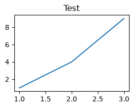
plt.show()는 그때까지 그린 그림을 출력 영역에 표시한다. 주피터 노트북에서는 셀이 끝날 때 그림이 자동으로 표시되기도 하지만, 본 교재는 그래프 셀을 언제나 plt.show()로 끝맺는다. 그래프 함수의 반환값 설명(<Axes: ...> 같은 글자)이 함께 출력되는 것을 막고, 한 셀에서 그림을 여러 장 그릴 때 그림의 경계를 분명히 하기 위함이다.
- 확인 2 판 번호 두 줄 아래에 제목이
Test인 꺾은선 그림이 보인다. 판 번호는 실습 환경에 따라 다를 수 있다.
| 막힐 때의 증상 | 원인 | 대처 |
|---|---|---|
ModuleNotFoundError: No module named 'seaborn' |
seaborn이 설치되지 않았다 | 부록 A.3의 %pip install seaborn으로 설치하고 커널을 다시 시작한다 |
그림 대신 <Figure size ... with 1 Axes>라는 글자만 나온다 |
노트북이 그림을 표시하지 못하는 설정이다 | 셀의 맨 위에 %matplotlib inline을 한 번 실행한 뒤 다시 실행한다 |
| 그림이 두 번 나온다 | plt.show() 앞에서 그림이 자동 표시되었다 |
동작에는 문제가 없다. 그대로 진행한다 |
[최신 자료 자리: 시험 환경의 matplotlib과 seaborn의 판] 시험 환경의 matplotlib, seaborn의 판과 한글 글꼴의 설치 여부. 공식 사이트(https://aice.study/info/aice/asso)에는 공개되어 있지 않다(2026-11-13 확인). seaborn 0.11 이하의 판에서는
barplot의 오차 막대 인자가errorbar가 아니라ci이므로(0.12.0의 변경 사항), 응시자가 사전 환경점검에서sns.__version__을 확인한 값을 학기마다 받아 적는다.
0-3. 자료 읽기
1절의 첫 셀(1.1절)이 라이브러리를 불러오고 자료를 읽는다. 1부의 모든 셀이 이 df를 쓴다.
- 확인 3 1.1절 셀의 출력이
(3030, 17)이다.
1. 그림과 축, 그림의 분할
1.1 matplotlib과 seaborn
seaborn은 matplotlib을 바탕으로 만든 통계 그래프 라이브러리로, 데이터프레임과 열 이름만 주면 빈도나 평균의 계산까지 수행하여 그래프를 그린다. 그래프는 seaborn이 그리고, 그림의 크기와 배치, 제목과 축 이름은 matplotlib이 다룬다. 시험에서도 두 라이브러리를 함께 쓴다.
# [예제 2]
import pandas as pd
import matplotlib.pyplot as plt
import seaborn as sns
DATA = "../kit/data/AICE_공통/"
df = pd.read_csv(DATA + "customers.csv")
df.shape(3030, 17)1.2 그림(Figure)과 축(Axes)
matplotlib의 그래프는 두 층으로 구성된다.
| 객체 | 뜻 | 비유 |
|---|---|---|
그림(Figure) |
그래프 전체를 담는 바탕. 크기(figsize)와 전체 제목을 가진다 |
종이 한 장 |
축(Axes) |
그래프 하나가 그려지는 영역. x축과 y축, 제목, 범례를 가진다 | 종이 위의 칸 하나 |
한 그림에는 축이 하나 이상 들어간다. 이름이 혼동되기 쉬운데, Axes는 그래프 한 칸을 뜻하고, 그 안의 가로축과 세로축 하나하나는 Axis라 부른다. plt.subplots()는 그림과 축을 함께 만들어 돌려준다.
[그림 자리: 그림과 축의 구조 도식] 한 장의
Figure안에 두 개의Axes가 가로로 놓인 도식. 그림 전체에fig.suptitle의 위치, 각 칸에ax.set_title(칸 제목),ax.set_xlabel과ax.set_ylabel(축 이름), 눈금과 눈금 글자(tick,tick label), 범례(legend), x축과 y축(Axis)의 위치를 이름표와 화살표로 표시한다. matplotlib 공식 문서 Quick start guide의 “Parts of a Figure” 그림과 같은 내용을 새로 그린다(공식 그림을 옮기지 않는다). 찍을 곳: 도식 도구로 새로 작성.
# [예제 3]
fig, ax = plt.subplots(figsize=(6, 3))
counts = df["grade"].value_counts()
ax.bar(counts.index, counts.values)
print(type(fig))
print(type(ax))
plt.show()<class 'matplotlib.figure.Figure'>
<class 'matplotlib.axes._axes.Axes'>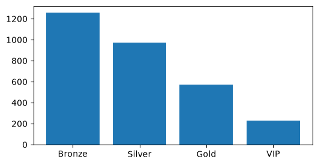
figsize=(6, 3)은 그림의 가로와 세로를 인치 단위로 지정한다. 지정하지 않으면 matplotlib의 기본값(6.4, 4.8)이 쓰인다. ax.bar는 그 축에 막대를 그리는 matplotlib의 메서드이다. 1장의 value_counts()가 돌려준 시리즈에서 인덱스(등급 이름)를 x에, 값(빈도)을 y에 주었다. 셀의 끝에 쓴 plt.show()는 그림을 표시한다. 생략하면 마지막 줄 그래프 함수의 반환값 설명이 함께 출력되므로 plt.show()로 끝맺는다.
출력의 두 줄은 fig와 ax의 자료형이다. Figure는 그림, Axes는 축이다. 칸이 하나인 그림에서 subplots()는 축 하나를 돌려주므로, ax는 배열이 아니라 축 객체 하나이다. 여기에 ax[0]처럼 번호를 붙이면 TypeError: 'Axes' object is not subscriptable이 난다(1.6절).
- 확인 4 1.2절 셀의 출력 둘째 줄에
Axes가 보이고, 막대가 네 개인 그림이 표시된다.
1.3 두 가지 작성 방식
matplotlib에는 그래프를 그리는 방식이 두 가지 있다.
| 방식 | 코드의 모양 | 쓰는 경우 |
|---|---|---|
| pyplot 방식 | plt.figure() 뒤에 plt.title(), plt.xlabel() |
그래프가 하나인 그림 |
| 객체 방식 | fig, ax = plt.subplots() 뒤에 ax.set_title(), ax.set_xlabel() |
한 그림에 그래프가 여럿인 경우 |
pyplot 방식의 함수는 “현재 축”, 즉 가장 최근에 만들어지거나 사용된 축에 작용한다. 아래 셀은 plt.figure로 그림을 만든 뒤 seaborn에 축을 지정하지 않고 히스토그램을 그린다. seaborn은 축을 지정받지 않으면 현재 축에 그린다.
# [예제 5]
plt.figure(figsize=(6, 3))
sns.histplot(data=df, x="tenure_months")
plt.show()1.4 그림의 분할: subplots와 ax= 인자
plt.subplots(nrows, ncols)는 그림을 행과 열의 칸으로 나눈다. 반환값의 둘째는 축의 배열이다. 칸이 하나이면 축 하나가, 한 줄이면 1차원 배열이, 여러 행과 여러 열이면 2차원 배열이 돌아온다. seaborn의 그래프 함수에 ax=축을 주면 그 칸에 그린다.
# [예제 6]
fig, axes = plt.subplots(1, 2, figsize=(10, 3.5))
sns.countplot(data=df, x="grade", ax=axes[0])
sns.countplot(data=df, x="payment", ax=axes[1])
print(axes.shape)
plt.tight_layout()
plt.show()(2,)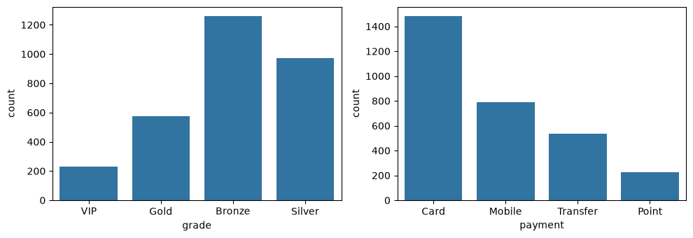
axes.shape가 (2,)이므로 axes[0]이 왼쪽 칸, axes[1]이 오른쪽 칸이다. plt.tight_layout()은 칸 사이의 간격을 조정하여 축 이름과 제목이 겹치지 않게 한다. 2행 2열로 나누면 축의 배열이 2차원이 되어 axes[행, 열]로 칸을 지정한다.
# [예제 9]
fig, axes = plt.subplots(2, 2, figsize=(9, 6))
sns.histplot(data=df, x="tenure_months", ax=axes[0, 0])
sns.histplot(data=df, x="visits_per_month", ax=axes[0, 1])
sns.histplot(data=df, x="coupon_use_rate", ax=axes[1, 0])
sns.histplot(data=df, x="last_login_days", ax=axes[1, 1])
print(axes.shape)
plt.tight_layout()
plt.show()(2, 2)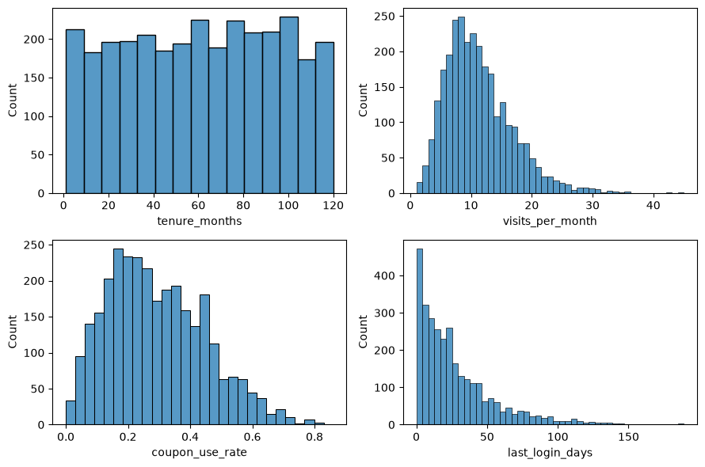
subplots의 호출 |
돌려주는 축 | shape |
칸을 고르는 법 |
|---|---|---|---|
plt.subplots() |
축 하나 | (배열이 아니다) | ax 그대로 |
plt.subplots(1, 2) |
1차원 배열 | (2,) |
axes[0], axes[1] |
plt.subplots(1, 3) |
1차원 배열 | (3,) |
axes[0] ~ axes[2] |
plt.subplots(2, 2) |
2차원 배열 | (2, 2) |
axes[0, 0] ~ axes[1, 1]. 첫 번호가 행, 둘째가 열 |
- 확인 5 1.4절 셀의 출력이
(2,), 1.5절 셀의 출력이(2, 2)이고, 1.5절의 그림에서 왼쪽 위 칸의 x축 이름이tenure_months이다.
1.5 축 수준 함수와 그림 수준 함수
seaborn의 함수는 그리는 대상에 따라 두 종류로 나뉜다.
| 구분 | 그리는 대상 | 반환값 | 크기 지정 | 본 장의 함수 |
|---|---|---|---|---|
| 축 수준 함수 | 주어진 축 하나(ax=) |
Axes |
그림을 먼저 만들 때 figsize |
countplot, barplot, histplot, boxplot, scatterplot, heatmap |
| 그림 수준 함수 | 새 그림 전체 | 격자 객체(JointGrid 등) |
함수의 height 인자 |
jointplot (그 밖에 displot, catplot, relplot, pairplot) |
[그림 자리: seaborn의 축 수준 함수와 그림 수준 함수의 관계 도식] 왼쪽에 그림 수준 함수(
relplot,displot,catplot), 오른쪽에 각각이 안에서 쓰는 축 수준 함수(scatterplot·lineplot,histplot·kdeplot,countplot·barplot·boxplot)를 묶어 보이는 도식. 그림 수준 함수는 그림 전체를 새로 만들고, 축 수준 함수는 주어진 칸 하나에 그린다는 것을 화살표로 표시한다. seaborn 공식 문서의 “Overview of seaborn plotting functions”의 분류를 따르되 그림은 새로 그린다. 찍을 곳: 도식 도구로 새로 작성.
# [예제 11]
ax = sns.countplot(data=df, x="app_user")
print(type(ax))
plt.show()<class 'matplotlib.axes._axes.Axes'># [예제 12]
g = sns.jointplot(data=df, x="tenure_months", y="annual_spend", height=4)
print(type(g))
plt.show()<class 'seaborn.axisgrid.JointGrid'>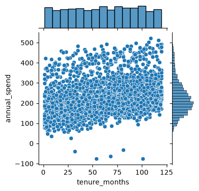
jointplot은 축 세 개(가운데의 산점도, 위와 오른쪽의 분포)를 가진 그림을 스스로 만든다. 따라서 subplots로 나눈 칸 하나에 넣을 수 없다. ax=를 주면 seaborn은 그 인자를 무시하고 경고만 낸 뒤 새 그림을 만든다. 가이드가 “한 그림에 두 그래프”를 요구하면 축 수준 함수를 쓰고, 결합 그래프는 따로 그린다. 그림 수준 함수의 크기는 figsize가 아니라 height(정사각형 한 변의 인치)로 정한다.
아래 셀은 가로 두 칸의 그림을 만든 뒤 jointplot에 왼쪽 칸을 ax=로 주고, seaborn이 낸 경고를 출력한다. 경고는 오류가 아니므로 셀은 끝까지 실행된다. 이 셀은 강의안에서만 실행한다.
# [예제 13]
import warnings
fig, axes = plt.subplots(1, 2, figsize=(8, 3))
with warnings.catch_warnings(record=True) as w:
warnings.simplefilter("always")
g = sns.jointplot(data=df, x="tenure_months", y="annual_spend", height=4, ax=axes[0])
print(w[0].message)
print(len(plt.get_fignums()))
plt.show()Ignoring `ax`; jointplot is a figure-level function.
2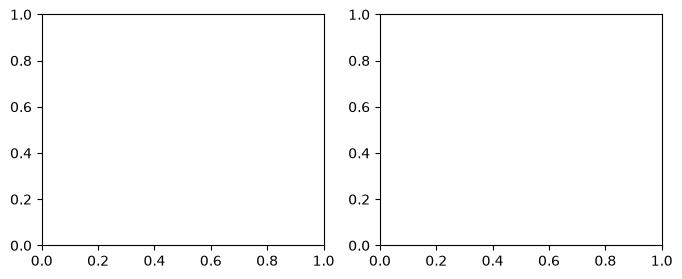

경고의 문장은 “ax를 무시한다. jointplot은 그림 수준 함수이다”라는 뜻이다. 둘째 줄의 2는 열려 있는 그림의 수이다. 첫째 그림(가로 두 칸)은 비어 있고, 결합 그래프는 둘째 그림에 따로 그려졌다. 경고를 놓치면 “빈 그림 하나와 결합 그래프 하나”라는 결과만 보고 원인을 찾기 어렵다.
노트북 1부의 연습 1(가로 두 칸)과 연습 2(2행 2열, [선택])를 푼다.
1.6 그림 분할의 흔한 오류
그림 분할의 오류는 대부분 “subplots가 돌려준 것이 축 하나인가, 1차원 배열인가, 2차원 배열인가”를 착각하여 생긴다. 2행 2열의 축 배열에 번호를 하나만 주면 다음과 같다.
# [예제 10]
axes[2]IndexError: index 2 is out of bounds for axis 0 with size 2axes[2]는 첫 축(행)의 2번을 찾는다. 행은 0과 1의 둘뿐이므로(size 2) 범위를 벗어났다. 세 번째 칸(왼쪽 아래)은 axes[1, 0]이다.
ax=를 빠뜨리면 오류는 나지 않지만 그래프가 겹친다. 아래 셀은 가로 두 칸을 만들었으나 두 히스토그램에 칸을 지정하지 않았다.
# [예제 8]
fig, axes = plt.subplots(1, 2, figsize=(10, 3.5))
sns.histplot(data=df, x="tenure_months")
sns.histplot(data=df, x="visits_per_month")
plt.tight_layout()
plt.show()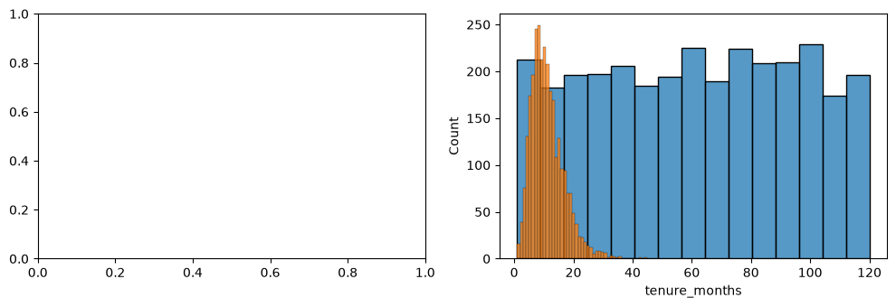
왼쪽 칸은 비어 있고, 두 히스토그램이 오른쪽 칸에 겹쳐 그려졌다. subplots가 마지막으로 만든 칸이 현재 축이고, 축을 지정받지 못한 seaborn은 현재 축에 그리기 때문이다. 두 열의 값의 범위가 달라(가입 기간 1~120, 방문 수 1~45) x축이 넓어지고, 방문 수의 히스토그램은 왼쪽에 몰려 보인다.
흔한 오류
| 증상 | 실제 메시지(마지막 줄) | 원인 | 대처 |
|---|---|---|---|
| 칸이 하나인 그림에 번호를 붙였다 | TypeError: 'Axes' object is not subscriptable |
fig, ax = plt.subplots()의 ax는 축 하나이다. ax[0] |
번호 없이 ax를 쓴다 |
| 축 배열 전체에 제목을 붙였다 | AttributeError: 'numpy.ndarray' object has no attribute 'set_title' |
plt.subplots(1, 2)의 반환값은 배열이다. axes.set_title(...) |
axes[0].set_title(...)처럼 칸을 고른다 |
| 2차원 배열에 번호를 하나만 주었다 | IndexError: index 2 is out of bounds for axis 0 with size 2 |
2행 2열의 axes[2] |
axes[행, 열]. 세 번째 칸은 axes[1, 0] |
| 그래프가 한 칸에 겹친다 | (오류 없음) | ax=를 빠뜨렸다 |
그래프 함수마다 ax=axes[i] |
| 칸 하나가 비고 새 그림이 생긴다 | (경고) Ignoring `ax`; jointplot is a figure-level function. |
그림 수준 함수에 ax=를 주었다 |
그림 수준 함수는 따로 그린다. 한 칸에 넣으려면 축 수준 함수(scatterplot)를 쓴다 |
| 칸의 제목과 축 이름이 겹친다 | (오류 없음) | 칸 사이의 간격이 좁다 | plt.show() 앞에 plt.tight_layout() |
- 확인 6 1.4절의 셀에서 둘째
countplot의ax=axes[1]을 지우고 실행하면 오른쪽 칸에 두 그래프가 겹친다. 확인한 뒤 원래대로 되돌린다. - 확인 7 연습 1의 그림이 가로 두 칸이고, 왼쪽 칸의 x축 이름이
app_user, 오른쪽 칸의 x축 이름이marketing_agree이다.
2. 제목, 축 이름, 범례, 눈금 회전, 한글 글꼴
2.1 pyplot 함수와 축의 메서드
같은 일을 하는 함수가 두 방식에 하나씩 있다. 이름이 조금 다르므로 표로 대응시켜 둔다.
| 할 일 | pyplot 방식 | 객체 방식 |
|---|---|---|
| 제목 | plt.title("...") |
ax.set_title("...") |
| x축 이름, y축 이름 | plt.xlabel("..."), plt.ylabel("...") |
ax.set_xlabel("..."), ax.set_ylabel("...") |
| 범례 | plt.legend(title=..., loc=...) |
ax.legend(title=..., loc=...) |
| x축 눈금 글자의 회전 | plt.xticks(rotation=45) |
ax.tick_params(axis="x", rotation=45) |
| 그림 전체의 제목 | plt.suptitle("...") |
fig.suptitle("...") |
아래 셀은 pyplot 방식으로 지역별 빈도 그래프에 제목과 축 이름을 붙이고, 겹치는 눈금 글자를 45도 회전한다. seaborn은 축 이름을 열 이름(region, count)으로 자동으로 붙이는데, plt.xlabel과 plt.ylabel은 그 이름을 바꾼다.
# [예제 14]
plt.figure(figsize=(8, 3.5))
sns.countplot(data=df, x="region")
plt.title("Customers by region")
plt.xlabel("Region")
plt.ylabel("Count")
plt.xticks(rotation=45)
plt.show()
막대가 15개인 것은 1장에서 확인한 대로 같은 지역이 여러 표기로 입력되었기 때문이다. 표기의 정리는 4장에서 한다.
2.2 범례
hue=열을 주면 seaborn은 그 열의 값마다 색을 달리하여 그리고 범례를 자동으로 만든다. 범례의 제목과 위치를 바꾸려면 legend를 다시 부른다. loc에는 "upper right", "upper left", "lower right", "best" 등을 쓴다.
# [예제 15]
fig, ax = plt.subplots(figsize=(6, 3.5))
sns.countplot(data=df, x="grade", hue="churn", ax=ax)
ax.set_title("Churn by grade")
ax.set_xlabel("Grade")
ax.set_ylabel("Count")
ax.legend(title="Churn", loc="upper right")
plt.show()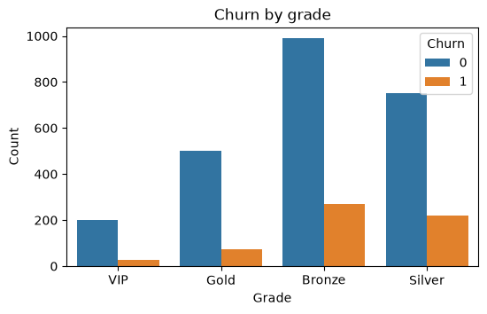
범례의 0과 1은 churn 열의 값이다. 막대의 순서가 VIP, Gold, Bronze, Silver인 것은 order를 주지 않아 자료에 처음 나타난 순서를 따랐기 때문이다. 순서를 지정하는 방법은 3.1절에서 다룬다.
2.3 칸마다 제목 붙이기와 눈금 회전
한 그림에 칸이 여럿이면 제목은 칸마다 axes[i].set_title()로 붙이고, 그림 전체의 제목은 fig.suptitle()로 붙인다. 한 칸의 눈금만 회전하려면 그 칸의 tick_params를 쓴다. plt.xticks는 현재 축, 즉 마지막 칸에만 작용하므로 칸이 여럿일 때에는 의도와 다른 칸이 회전될 수 있다.
# [예제 16]
fig, axes = plt.subplots(1, 2, figsize=(10, 3.5))
sns.countplot(data=df, x="payment", ax=axes[0])
sns.countplot(data=df, x="region", ax=axes[1])
axes[0].set_title("Payment")
axes[1].set_title("Region")
axes[1].tick_params(axis="x", rotation=90)
fig.suptitle("Categorical columns")
plt.tight_layout()
plt.show()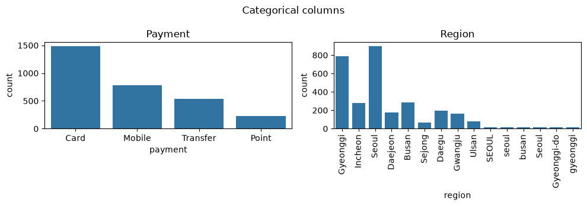
제목과 축 이름의 확인
그림에 붙인 글자는 축의 get_title(), get_xlabel(), get_ylabel()로 다시 읽을 수 있다. 중심 실습의 자가 채점 셀이 이 방법으로 제목과 축 이름을 검사한다. 시험에서도 채점은 그림을 눈으로 보지 않고 객체의 값으로 할 수 있으므로, 가이드의 문자열을 한 글자도 바꾸지 않는다.
# [예제 17]
fig, ax = plt.subplots(figsize=(6, 3.5))
sns.countplot(data=df, x="grade", ax=ax)
ax.set_title("Grade count")
ax.set_xlabel("Grade")
print(ax.get_title())
print(ax.get_xlabel())
print(ax.get_ylabel())
plt.show()Grade count
Grade
count첫 줄은 set_title로 붙인 제목, 둘째 줄은 set_xlabel로 바꾼 x축 이름이다. 셋째 줄의 count는 바꾸지 않은 y축 이름으로, seaborn이 자동으로 붙인 것이다.
- 확인 8 위의 셀(제목과 축 이름을 출력하는 셀)의 출력이
Grade count,Grade,count의 세 줄이다.
2.4 한글 글꼴
matplotlib의 기본 글꼴에는 한글 글자가 없다. 한글 제목을 그대로 쓰면 글자가 네모(□)로 표시되고 글꼴이 없다는 경고가 출력된다. 현재의 글꼴 설정은 plt.rcParams에서 확인한다.
# [예제 18]
print(plt.rcParams["font.family"])
print(plt.rcParams["axes.unicode_minus"])['sans-serif']
TruercParams는 matplotlib의 설정값을 담은 사전이다. 한글을 쓰려면 운영 체제에 설치된 한글 글꼴의 이름을 font.family에 지정한다. 한글 글꼴을 쓰면 음수 부호(−)가 깨지는 경우가 있으므로 axes.unicode_minus를 False로 바꾸어 일반 하이픈으로 표시하게 한다.
plt.rcParams["font.family"] = "Malgun Gothic" # 윈도우(맑은 고딕). macOS는 "AppleGothic"
plt.rcParams["axes.unicode_minus"] = False # 음수 부호를 하이픈으로 표시이 설정은 커널이 다시 시작될 때까지 이후의 모든 그림에 적용된다. 글꼴의 이름은 환경마다 다르고 리눅스 서버에는 한글 글꼴이 없는 경우가 많으므로, 본 교재의 그림은 모든 글자를 영문으로 쓴다. 시험에서는 가이드가 지정한 문자열을 그대로 쓴다.
설정의 단계
한글 글꼴은 다음 다섯 단계로 설정하고 확인한다. 아래의 셀은 이 교재를 빌드한 윈도우 PC에서 실행한 결과이며, 실습 환경에서는 글꼴의 목록이 다르다. 첫 단계의 셀만 노트북에 있고, 나머지는 강의안에서만 실행한다. 본 교재의 그림에는 한글을 쓰지 않는다는 원칙에 따라, 한글 제목을 붙인 확인용 그림은 그리기만 하고 표시하지 않는다(plt.close).
1단계: 설치된 한글 글꼴을 찾는다. font_manager.get_font_names()는 matplotlib이 찾은 글꼴의 이름 목록을 돌려준다. 쓰려는 이름이 목록에 있는지 확인한다.
# [예제 19]
from matplotlib import font_manager
names = font_manager.get_font_names()
print("Malgun Gothic" in names, "AppleGothic" in names, "NanumGothic" in names)True False True이 PC에는 맑은 고딕(Malgun Gothic)과 나눔고딕(NanumGothic)이 있고, macOS의 AppleGothic은 없다. 목록에 없는 글꼴은 지정하여도 쓰이지 않는다.
2단계: 설정하기 전의 증상을 본다. 기본 글꼴로 한글 제목을 그리면 글자마다 경고가 난다. 아래 셀은 그 경고의 첫 번째를 출력한다.
# [예제 20]
fig, ax = plt.subplots(figsize=(3, 2))
ax.set_title("한글")
with warnings.catch_warnings(record=True) as w:
warnings.simplefilter("always")
fig.canvas.draw()
print(w[0].message)
plt.close(fig)Glyph 54620 (\N{HANGUL SYLLABLE HAN}) missing from font(s) DejaVu Sans.Glyph 54620은 글자 「한」의 번호이고, missing from font(s) DejaVu Sans는 기본 글꼴인 DejaVu Sans에 그 글자의 모양(글리프)이 없다는 뜻이다. 그림에서는 이 글자가 네모로 표시된다.
3단계: 그 글꼴의 파일을 찾을 수 있는지 확인하고 지정한다. findfont에 fallback_to_default=False를 주면, 글꼴을 찾지 못할 때 기본 글꼴로 대신하지 않고 오류를 낸다. 확인을 먼저 하므로, 글꼴이 없으면 설정을 바꾸기 전에 셀이 멈춘다.
# [예제 21]
print(font_manager.findfont("Malgun Gothic", fallback_to_default=False))
plt.rcParams["font.family"] = "Malgun Gothic"
plt.rcParams["axes.unicode_minus"] = False
print(plt.rcParams["font.family"])C:\Windows\Fonts\malgun.ttf
['Malgun Gothic']첫 줄은 그 글꼴 파일의 위치, 둘째 줄은 지정한 글꼴의 이름이다. 파일의 위치가 나오면 설정이 쓰일 수 있는 상태이다. 목록에 없는 글꼴을 같은 방법으로 찾으면 오류가 난다.
# [예제 24]
font_manager.findfont("AppleGothic", fallback_to_default=False)ValueError: Failed to find font AppleGothic:style=normal:variant=normal:weight=normal:stretch=normal:size=10.0, and fallback to the default font was disabled메시지의 앞부분 Failed to find font AppleGothic이 원인이다. 이 경우 1단계의 목록에 있는 다른 글꼴을 고른다.
4단계: 같은 한글 제목을 다시 그려 경고가 사라졌는지 확인한다. 출력은 경고의 개수이다.
# [예제 22]
fig, ax = plt.subplots(figsize=(3, 2))
ax.set_title("한글")
with warnings.catch_warnings(record=True) as w:
warnings.simplefilter("always")
fig.canvas.draw()
print(len(w))
plt.close(fig)0경고가 0개이면 한글 글자가 모두 그 글꼴로 그려졌다는 뜻이다.
5단계: 필요하면 원래 설정으로 되돌린다. 이 교재는 다음 셀들의 그림을 기본 글꼴로 그리기 위하여 되돌렸다. 커널을 다시 시작하여도 원래 설정으로 돌아간다.
# [예제 23]
plt.rcParams["font.family"] = "sans-serif"
plt.rcParams["axes.unicode_minus"] = True
print(plt.rcParams["font.family"], plt.rcParams["axes.unicode_minus"])['sans-serif'] True| 단계 | 하는 일 | 확인하는 값 |
|---|---|---|
| 1 | 설치된 글꼴의 이름을 찾는다 | get_font_names()의 목록에 그 이름이 있다(True) |
| 2 | 설정 전의 증상을 본다 | Glyph ... missing from font(s) DejaVu Sans 경고, 그림의 네모 글자 |
| 3 | font.family와 axes.unicode_minus를 지정한다 |
findfont(..., fallback_to_default=False)가 파일의 위치를 돌려준다 |
| 4 | 같은 그림을 다시 그린다 | 경고가 없다. 한글이 보인다. 음수 눈금이 깨지지 않는다 |
| 5 | 필요하면 되돌린다 | font.family가 ['sans-serif'] |
- 확인 9 노트북의 한글 글꼴 확인 셀의 출력이
True나False의 세 값이다. 학교 실습 환경의 결과를 적어 둔다(실습 환경마다 다르다).
노트북 1부의 연습 3(제목, 축 이름, 눈금 회전)과 연습 4(범례)를 푼다.
흔한 오류
| 증상 | 실제 메시지(마지막 줄) | 원인 | 대처 |
|---|---|---|---|
| 한글이 네모로 나온다 | (경고) Glyph 54620 (\N{HANGUL SYLLABLE HAN}) missing from font(s) DejaVu Sans. |
기본 글꼴에 한글이 없다 | 2.4절의 단계로 한글 글꼴을 지정하거나, 영문으로 쓴다 |
| 지정한 글꼴을 찾지 못한다 | ValueError: Failed to find font AppleGothic:style=normal:... (fallback_to_default=False로 찾은 경우) |
그 글꼴이 설치되어 있지 않다 | 1단계의 목록에 있는 이름을 쓴다 |
| 제목이 엉뚱한 칸에 붙었다 | (오류 없음) | 칸이 여럿인 그림에서 plt.title을 썼다. 현재 축(마지막 칸)에 붙는다 |
axes[i].set_title() |
| 왼쪽 칸의 눈금이 회전되지 않았다 | (오류 없음) | plt.xticks(rotation=)은 현재 축에만 작용한다 |
axes[0].tick_params(axis="x", rotation=) |
| 범례의 제목이 바뀌지 않았다 | (오류 없음) | legend를 부르지 않고 hue만 주었다 |
ax.legend(title="...") |
- 확인 10 연습 3의 그림의 제목이
Region count이고, x축의 눈금 글자가 세로(90도)로 서 있다.
3. 범주형 변수의 분포
3.1 빈도 그래프: countplot
countplot은 범주형 열의 값마다 행의 수를 세어 막대로 그린다. 1장의 value_counts()를 그래프로 그린 것과 같다. 주요 인자는 다음과 같다.
| 인자 | 뜻 | 기본값 |
|---|---|---|
data |
데이터프레임 | 없음 |
x |
막대를 가로로 늘어놓을 열의 이름(문자열) | 없음 |
order |
막대의 순서를 지정하는 리스트 | 자료에 나타난 순서 |
hue |
색으로 나눌 열의 이름 | 없음 |
# [예제 25]
order = ["Bronze", "Silver", "Gold", "VIP"]
ax = sns.countplot(data=df, x="grade", order=order)
plt.title("Grade count")
print(ax.containers[0].datavalues)
plt.show()[1259. 970. 573. 228.]
countplot이 돌려준 축의 containers[0].datavalues는 그려진 막대의 높이를 순서대로 담은 배열이다. 출력의 네 값은 order의 순서(Bronze, Silver, Gold, VIP)의 막대 높이이고, 1장 5.1절의 value_counts()의 값과 같다. 그래프가 무엇을 그렸는지를 코드로 확인하는 방법이다.
결과 읽기
| 묻는 것 | 읽는 자리 | 이 그래프의 값 |
|---|---|---|
| 막대 하나가 뜻하는 것 | x축의 범주 | 등급 하나 |
| 막대의 높이 | y축(count) |
그 등급의 행 수. Bronze 1259, VIP 228 |
| 막대의 순서 | order 인자 |
Bronze, Silver, Gold, VIP |
| 가장 많은 범주 | 가장 높은 막대 | 그래프로는 짐작만 하고 value_counts().idxmax()로 구한다 |
등급처럼 순서가 있는 범주는 order로 순서를 지정해야 읽기 쉽다. 빈도가 많은 순서로 놓으려면 order=df["grade"].value_counts().index처럼 쓴다. “가장 많은 범주”를 묻는 답 변수는 막대의 높이를 눈으로 비교하지 않고 같은 자료에서 코드로 구한다.
# [예제 26]
counts = df["grade"].value_counts()
print(counts)
print(counts.idxmax())grade
Bronze 1259
Silver 970
Gold 573
VIP 228
Name: count, dtype: int64
Bronze- 확인 11 3.1절 셀의 출력이
[1259. 970. 573. 228.]이고, 그림의 막대가 왼쪽부터 Bronze, Silver, Gold, VIP의 순서이다.
3.2 막대그래프: barplot
barplot은 x의 범주마다 y 열의 값을 하나로 요약하여 막대의 높이로 그린다. 요약에 쓰는 함수가 estimator이며 기본값은 평균("mean")이다. 막대 끝의 검은 선은 오차 막대로, 기본값(errorbar=("ci", 95))은 평균의 95% 신뢰 구간이다. 신뢰 구간은 자료를 여러 번 다시 뽑아(부트스트랩) 계산하므로 시간이 걸린다.
# [예제 27]
sns.barplot(data=df, x="grade", y="annual_spend", order=order)
plt.title("Mean annual spend by grade")
plt.show()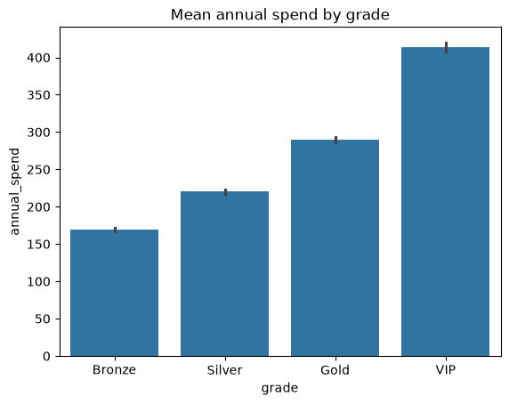
| 그래프 | 막대의 높이 | y 인자 |
|---|---|---|
countplot |
x 범주의 행 수 | 쓰지 않는다 |
barplot |
x 범주에서 y 열의 요약값(기본 평균) | 수치형 열 |
0과 1로 된 열의 평균은 1의 비율이다. 따라서 y="churn"으로 막대그래프를 그리면 막대의 높이가 이탈 비율이 된다. 아래 셀은 오차 막대를 없애고(errorbar=None), 그려진 막대의 높이를 출력한 뒤, 같은 값을 groupby로 구하여 비교한다.
# [예제 28]
ax = sns.barplot(data=df, x="payment", y="churn", errorbar=None)
plt.title("Churn rate by payment")
print(ax.containers[0].datavalues.round(3))
plt.show()
df.groupby("payment")["churn"].mean().round(3)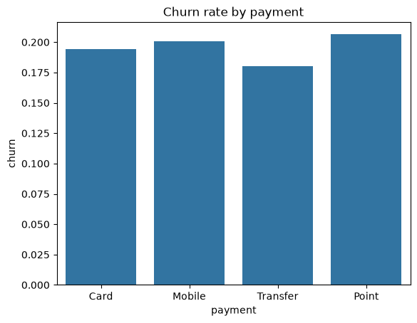
[0.194 0.201 0.18 0.206]
payment
Card 0.194
Mobile 0.201
Point 0.206
Transfer 0.180
Name: churn, dtype: float64첫 줄은 막대의 높이를 그림의 왼쪽부터 적은 것이다. 막대의 순서는 order를 주지 않았으므로 자료에 처음 나타난 순서(Card, Mobile, Transfer, Point)이다. 아래의 groupby 결과는 알파벳 순서(Card, Mobile, Point, Transfer)이므로, 같은 값이 다른 순서로 놓여 있다. 막대의 높이 0.18은 Transfer의 0.180이고, 마지막 막대의 0.206은 Point의 값이다.
막대의 높이는 0.18~0.21로 서로 비슷하여 눈으로는 순위를 가리기 어렵다. groupby로 구한 값에서 이탈 비율이 가장 높은 결제 수단은 Point(0.206)이고 가장 낮은 결제 수단은 Transfer(0.180)이다. 그래프에서 읽는 답을 코드로 구해야 하는 까닭이다. 평균 대신 중앙값이나 합계로 요약하려면 estimator="median", estimator="sum"을 쓴다.
결과 읽기
| 묻는 것 | 읽는 자리 | 이 그래프의 값 |
|---|---|---|
| 막대의 높이 | y축(churn) |
결제 수단별 churn의 평균, 즉 이탈 비율 |
| 막대의 순서 | x축 | 자료에 처음 나타난 순서. 알파벳 순서가 아니다 |
| 오차 막대 | 막대 끝의 검은 선 | errorbar=None이므로 없다 |
| 가장 높은 막대 | 높이 비교 | 눈으로 가리기 어렵다. groupby(...).mean().idxmax() |
- 확인 12 3.2절의 이탈 비율 셀에서 첫 줄의 막대 높이 네 개와
groupby결과의 네 값이 순서만 다르고 같은 값이다.
3.3 열 이름의 오류
seaborn의 x, y, hue에는 열 이름을 문자열로 준다. 따옴표를 빠뜨리면 파이썬은 grade를 변수의 이름으로 읽는다.
# [예제 29]
sns.countplot(data=df, x=grade)NameError: name 'grade' is not defined열 이름의 대소문자가 다르면 seaborn이 그 이름을 자료에서 찾지 못한다.
# [예제 30]
sns.countplot(data=df, x="Grade")ValueError: Could not interpret value `Grade` for `x`. An entry with this name does not appear in `data`.order의 값에 오타가 있으면 오류가 나지 않는다. 그 값의 자리는 비어 있고 막대가 하나 모자라게 그려진다. 아래 셀은 "VIP"를 "Vip"로 잘못 쓴 경우이다. 이 셀은 강의안에서만 실행한다.
# [예제 31]
ax = sns.countplot(data=df, x="grade", order=["Bronze", "Silver", "Gold", "Vip"])
plt.title("Grade count")
print(ax.containers[0].datavalues)
plt.show()[1259. 970. 573.]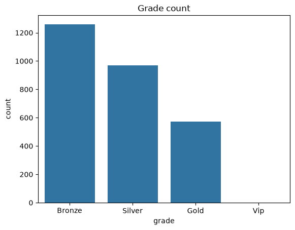
막대의 높이가 세 개뿐이고 x축의 네 번째 자리(Vip)는 비어 있다. 자료에 Vip라는 값이 없기 때문이다. 오류 메시지가 없으므로, 막대의 수가 범주의 수와 같은지를 눈으로 확인해야 한다.
흔한 오류
| 증상 | 실제 메시지(마지막 줄) | 원인 | 정정 |
|---|---|---|---|
| 열 이름에 따옴표가 없다 | NameError: name 'grade' is not defined |
파이썬이 grade를 변수로 읽었다 |
x="grade" |
| 열 이름의 대소문자가 다르다 | ValueError: Could not interpret value `Grade` for `x`. An entry with this name does not appear in `data`. |
자료에 Grade라는 열이 없다 |
df.columns로 이름을 확인한다 |
| 막대 하나가 비어 있다 | (오류 없음) | order의 값에 오타가 있다 |
df["열"].unique()로 실제 값을 확인한다 |
| 막대가 하나뿐이고 높이가 행 수이다 | (오류 없음) | countplot에 범주가 아닌 열(연속 수치)을 주었거나, x 대신 data만 주었다 |
그래프의 종류와 인자를 가이드와 대조한다 |
| 셀의 실행이 오래 걸린다 | (오류 없음) | barplot의 신뢰 구간 계산 |
errorbar=None |
노트북 1부의 연습 5(빈도 순서)와 연습 6(중앙값 막대그래프)을 푼다.
- 확인 13 연습 6의 그림에서 막대 끝에 검은 선이 없고, 막대의 순서가 Bronze, Silver, Gold, VIP이다.
4. 수치형 변수의 분포
4.1 히스토그램: histplot
히스토그램은 수치형 열의 값을 같은 폭의 구간으로 나누고 구간마다 행의 수를 막대로 그린다. 분포의 모양(한쪽으로 치우침, 봉우리의 수)과 범위를 벗어난 값을 확인하는 데 쓴다.
| 인자 | 뜻 | 기본값 |
|---|---|---|
bins |
구간의 수 | "auto"(자료에서 자동으로 정한다) |
kde |
분포를 매끄러운 곡선(커널 밀도 추정)으로 함께 그린다 | False |
hue |
색으로 나눌 열 | 없음 |
계산의 원리: 값 열 개의 손 계산
자료 1, 2, 2, 3, 3, 3, 4, 4, 5, 9를 구간 4개로 나눈다. 구간의 폭은 (최댓값 - 최솟값) ÷ 구간 수 = (9 - 1) ÷ 4 = 2이다. 따라서 구간의 경계는 1, 3, 5, 7, 9이다.
| 구간 | 들어가는 값 | 개수 |
|---|---|---|
| 1 이상 3 미만 | 1, 2, 2 | 3 |
| 3 이상 5 미만 | 3, 3, 3, 4, 4 | 5 |
| 5 이상 7 미만 | 5 | 1 |
| 7 이상 9 이하 | 9 | 1 |
구간은 왼쪽 끝을 포함하고 오른쪽 끝을 포함하지 않는다. 마지막 구간만 오른쪽 끝(최댓값)을 포함한다. 같은 계산을 넘파이의 histogram으로 실행하고, 같은 자료로 히스토그램을 그린다.
# [예제 32]
import numpy as np
x = pd.Series([1, 2, 2, 3, 3, 3, 4, 4, 5, 9])
counts, edges = np.histogram(x, bins=4)
print(edges)
print(counts)[1. 3. 5. 7. 9.]
[3 5 1 1]# [예제 33]
ax = sns.histplot(x=x, bins=4)
ax.set_title("Small sample, bins=4")
print(ax.containers[0].datavalues)
plt.show()[3 5 1 1]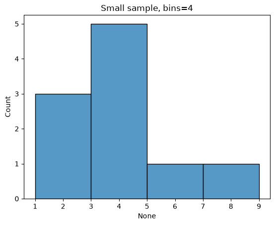
경계와 개수가 손 계산과 같고, 그린 막대의 높이([3 5 1 1])도 같다. 막대의 높이는 그 구간에 든 값의 개수이며, 막대의 폭은 구간의 폭(2)이다. 오른쪽 끝의 9 하나가 7~9의 구간을 따로 차지하고, 5~7의 구간과 함께 낮은 막대 둘을 만든다. 공통 자료에서 극단적인 값이 하나라도 있으면 같은 일이 생긴다.
- 확인 14 노트북의 작은 자료의 셀에서 경계가
[1. 3. 5. 7. 9.], 개수가[3 5 1 1]이고, 그린 히스토그램의 막대 높이도[3 5 1 1]이다.
공통 자료의 히스토그램
# [예제 34]
sns.histplot(data=df, x="annual_spend", bins=30, kde=True)
plt.title("Annual spend")
plt.show()
분포는 오른쪽으로 꼬리가 긴 모양이다. 왼쪽 끝의 0보다 작은 구간에 낮은 막대가 보인다. 1장의 describe()에서 최솟값이 -76.1이었던 값들이다. 구간이 너무 적으면 모양이 뭉개지고 너무 많으면 들쭉날쭉해진다. 가이드가 bins를 지정하면 그대로 쓴다.
구간 수의 영향
같은 자료를 구간 5개, 30개, 150개로 그려 비교한다.
# [예제 35]
fig, axes = plt.subplots(1, 3, figsize=(12, 3.5))
sns.histplot(data=df, x="annual_spend", bins=5, ax=axes[0])
sns.histplot(data=df, x="annual_spend", bins=30, ax=axes[1])
sns.histplot(data=df, x="annual_spend", bins=150, ax=axes[2])
axes[0].set_title("bins=5")
axes[1].set_title("bins=30")
axes[2].set_title("bins=150")
plt.tight_layout()
plt.show()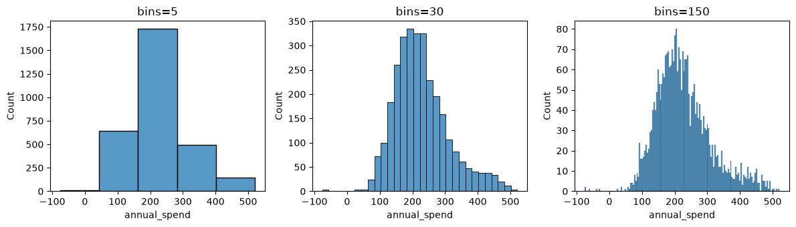
| 구간 수 | 보이는 것 | 놓치는 것 |
|---|---|---|
| 5 | 값이 200 안팎에 몰려 있다는 큰 모양 | 왼쪽의 음수 값, 꼬리의 모양 |
| 30 | 봉우리 하나와 오른쪽 꼬리, 왼쪽 끝의 낮은 막대 | (적당하다) |
| 150 | 세밀한 값의 위치 | 막대마다 개수가 적어 들쭉날쭉하고, 전체의 모양이 흐려진다 |
구간 수에는 정답이 없다. 분포의 모양을 볼 때에는 기본값("auto")이나 20~50개로 시작하고, 극단값을 찾을 때에는 구간을 늘려 본다. 구간 수가 적으면 음수처럼 적은 수의 특이한 값이 이웃한 값과 한 구간에 섞여 보이지 않게 된다.
결과 읽기
| 묻는 것 | 읽는 자리 | 이 그래프(annual_spend, 구간 30)의 값 |
|---|---|---|
| 값이 가장 많이 모인 곳 | 가장 높은 막대의 x 위치 | 200 안팎 |
| 치우침 | 꼬리가 긴 쪽 | 오른쪽(큰 값 쪽)으로 길다. 평균이 중앙값보다 크다(226.8과 214.2, 1장 3.3절) |
| 봉우리의 수 | 높은 막대 무리의 수 | 하나 |
| 범위를 벗어난 값 | 양 끝의 떨어진 낮은 막대 | 0보다 작은 구간 |
hue를 주면 범주마다 히스토그램을 겹쳐 그린다. 아래 그래프에서 앱 사용자(Y)의 분포가 오른쪽에 있다. 1장 5.4절에서 앱 사용자의 구매액 평균이 더 높았던 것과 같다.
# [예제 36]
sns.histplot(data=df, x="annual_spend", hue="app_user", bins=30)
plt.title("Annual spend by app user")
plt.show()
4.2 상자그림: boxplot
상자그림은 분포를 다섯 개의 위치로 요약한다.
| 요소 | 뜻 |
|---|---|
| 상자의 아래 변과 위 변 | 제1사분위수(Q1, 25%)와 제3사분위수(Q3, 75%) |
| 상자 안의 선 | 중앙값(50%) |
| 사분위수 범위(IQR) | Q3 - Q1. 상자의 높이 |
| 수염 | 상자에서 위아래로 뻗은 선. Q1 - 1.5×IQR 이상, Q3 + 1.5×IQR 이하의 범위 안에서 가장 먼 자료까지 그린다 |
| 수염 밖의 점 | Q1 - 1.5×IQR보다 작거나 Q3 + 1.5×IQR보다 큰 값. 이상치 후보로 하나하나 점으로 그린다 |
1.5는 boxplot의 whis 인자의 기본값이다. whis=3으로 바꾸면 수염이 길어지고 점으로 표시되는 값이 줄어든다.
계산의 원리: 다섯 수치와 수염 끝의 손 계산
4.1절의 작은 자료(1, 2, 2, 3, 3, 3, 4, 4, 5, 9)로 상자그림의 각 위치를 손으로 계산한다. 값은 10개이고 이미 작은 순서로 놓여 있다. 사분위수의 위치는 1장 3.3절과 같이 (개수 - 1) × 비율로 구한다.
| 위치 | 계산 | 값 |
|---|---|---|
| Q1 | 위치 (10 - 1) × 0.25 = 2.25. 0부터 센 2번째 값(2)과 3번째 값(3) 사이의 0.25 지점: 2 + 0.25 × (3 - 2) | 2.25 |
| 중앙값 | 위치 4.5. 4번째 값(3)과 5번째 값(3)의 가운데 | 3.0 |
| Q3 | 위치 6.75. 6번째 값(4)과 7번째 값(4) 사이 | 4.0 |
| IQR | 4.0 - 2.25 | 1.75 |
| 아래 경계 | 2.25 - 1.5 × 1.75 = 2.25 - 2.625 | -0.375 |
| 위 경계 | 4.0 + 2.625 | 6.625 |
| 아래 수염의 끝 | 아래 경계(-0.375) 이상인 값 가운데 가장 작은 값 | 1 |
| 위 수염의 끝 | 위 경계(6.625) 이하인 값 가운데 가장 큰 값 | 5 |
| 수염 밖의 점 | 경계 밖의 값 | 9 |
수염의 끝은 경계값(-0.375, 6.625) 자체가 아니라 경계 안에 실제로 있는 값 가운데 가장 먼 값이다. 위 수염은 6.625까지 뻗지 않고 실제 값 5에서 멈춘다. 같은 계산을 코드로 실행한다.
# [예제 37]
q1 = x.quantile(0.25)
q3 = x.quantile(0.75)
iqr = q3 - q1
print(q1, x.median(), q3, iqr)
print(q1 - 1.5 * iqr, q3 + 1.5 * iqr)
print(x[x >= q1 - 1.5 * iqr].min(), x[x <= q3 + 1.5 * iqr].max())
print(x[(x < q1 - 1.5 * iqr) | (x > q3 + 1.5 * iqr)].tolist())2.25 3.0 4.0 1.75
-0.375 6.625
1 5
[9]출력의 넷째 줄 [9]가 수염 밖의 점이다. 손 계산의 아홉 값과 모두 같다.
matplotlib의 계산과의 대조 [선택]
seaborn의 boxplot은 상자그림의 위치를 matplotlib의 cbook.boxplot_stats로 계산한다. 같은 자료를 넣으면 그림이 쓰는 값을 직접 볼 수 있다. 이 셀은 강의안에서만 실행한다.
# [예제 38]
from matplotlib import cbook
st = cbook.boxplot_stats(x.values)[0]
print(st["q1"], st["med"], st["q3"])
print(st["whislo"], st["whishi"], st["fliers"])2.25 3.0 4.0
1 5 [9]whislo와 whishi는 아래와 위 수염의 끝, fliers는 수염 밖의 점이다. pandas로 계산한 값과 같으므로, 상자그림의 점을 세는 대신 위의 pandas 코드로 이상치를 구하여도 그래프와 어긋나지 않는다. 같은 자료로 그린 상자그림은 다음과 같다.
# [예제 39]
sns.boxplot(y=x)
plt.title("Small sample")
plt.show()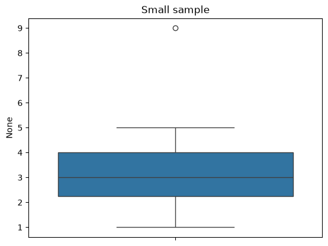
상자의 아래 변은 2.25, 위 변은 4.0, 안의 선은 3.0이다. 아래 수염은 1, 위 수염은 5에서 끝나고, 9가 수염 밖의 점으로 따로 그려졌다.
- 확인 15 노트북의 작은 자료의 셀에서 출력이
2.25 3.0 4.0 1.75,-0.375 6.625,1 5,[9]의 네 줄이고, 상자그림에 점이 하나 있다.
공통 자료의 상자그림
# [예제 40]
sns.boxplot(data=df, y="avg_session_min")
plt.title("Average session minutes")
plt.show()
이 상자그림에서 상자는 0 근처에 납작하게 눌려 있고 300~830분의 점 몇 개가 위쪽에 떨어져 있다. 극단적인 값이 y축의 범위를 넓혀 놓았기 때문이다. 수염의 끝이 어디인지는 사분위수로 계산할 수 있다.
# [예제 41]
s = df["avg_session_min"]
q1 = s.quantile(0.25)
q3 = s.quantile(0.75)
iqr = q3 - q1
lower = q1 - 1.5 * iqr
upper = q3 + 1.5 * iqr
print(round(q1, 2), round(q3, 2), round(iqr, 2))
print(round(lower, 2), round(upper, 2))
print((s < lower).sum(), (s > upper).sum())13.7 19.9 6.2
4.4 29.2
15 21Q1은 13.7분, Q3은 19.9분, IQR은 6.2분이다. 수염의 범위는 4.4분에서 29.2분까지이고, 그 밖의 값이 아래쪽에 15개, 위쪽에 21개 있다. 그래프에서는 비슷한 값의 점이 겹쳐 보이므로 점의 개수는 코드로 구한다.
결과 읽기
| 묻는 것 | 읽는 자리 | 이 그래프(avg_session_min)의 값 |
|---|---|---|
| 가운데 값 | 상자 안의 선 | 중앙값 16.7분(1장 3.3절) |
| 값의 절반이 있는 범위 | 상자의 아래 변과 위 변 | 13.7분~19.9분 |
| 퍼짐 | 상자의 높이(IQR) | 6.2분 |
| 이상치 후보 | 수염 밖의 점 | 아래 15개, 위 21개(코드로 센 값) |
| 상자가 납작한 까닭 | y축의 범위 | 830.7분까지의 극단값이 y축을 넓혔다 |
상자그림의 점은 “이상치 후보”이다. 830분처럼 업무상 불가능한 값은 입력 오류이지만, 30분처럼 경계를 조금 넘는 값은 실제로 오래 머문 회원일 수 있다. 어느 값을 제거할지는 업무의 판단과 가이드의 지시를 따른다. 3장에서는 이 계산을 행의 제거에 쓴다.
x에 범주형 열을 주면 범주마다 상자그림을 나란히 그려 분포를 비교할 수 있다.
# [예제 42]
sns.boxplot(data=df, x="grade", y="annual_spend", order=order)
plt.title("Annual spend by grade")
plt.show()
등급이 높을수록 중앙값이 높고, 각 등급 안에서도 수염 밖의 점이 있다. 전체 자료에서는 이상치가 아닌 값도 한 등급 안에서는 이상치로 표시될 수 있다.
흔한 오류
| 증상 | 실제 메시지·모양 | 원인 | 대처 |
|---|---|---|---|
| 상자가 납작한 선처럼 보인다 | (오류 없음) | 극단값이 축의 범위를 넓혔다 | 그래프의 결함이 아니다. 이상치를 코드로 확인한다 |
| 상자그림이 가로로 누웠다 | (오류 없음) | 수치형 열을 x=에 주었다 |
세로 상자그림은 y=열 |
| 점의 수를 눈으로 셌더니 코드와 다르다 | (오류 없음) | 같은 값의 점이 겹쳐 하나로 보인다 | 4.4절처럼 코드로 센다 |
히스토그램의 bins에 문자열을 주었다 |
`ValueError: '40' is not a valid estimator forbins``|bins=“40”. 수는 따옴표 없이 쓴다 |bins=40` |
마지막 줄의 메시지는 sns.histplot(data=df, x="annual_spend", bins="40")을 강의안에서 실행하여 얻은 것이다.
- 확인 16 4.2절의 공통 자료 셀의 출력이
13.7 19.9 6.2,4.4 29.2,15 21의 세 줄이다. - 확인 17 연습 8의 출력에서
churn이 1인 회원의 중앙값이 0인 회원의 중앙값보다 크다.
노트북 1부의 연습 7(범주별 히스토그램)과 연습 8(범주별 상자그림과 중앙값)을 푼다.
5. 두 변수의 관계
5.1 산점도: scatterplot
산점도는 두 수치형 열의 값을 x와 y로 하여 행마다 점 하나를 찍는다. 점들이 오른쪽 위로 향하면 양의 관계, 오른쪽 아래로 향하면 음의 관계이다. hue로 범주를 색으로 나눌 수 있다.
# [예제 44]
sns.scatterplot(data=df, x="tenure_months", y="annual_spend", hue="app_user")
plt.title("Tenure and annual spend")
plt.show()
가입 기간이 길수록 연간 구매액이 다소 커지나, 같은 가입 기간에서도 구매액의 폭이 넓다. 아래쪽의 0보다 작은 점은 4.1절에서 본 값이다.
5.2 결합 그래프: jointplot
jointplot은 가운데에 두 변수의 관계를, 위와 오른쪽에 각 변수의 분포를 함께 그린다. 그림 수준 함수이므로 크기는 height로 정하고, 그림 전체의 제목은 반환값의 figure 속성에 suptitle로 붙인다. y=1.02는 제목이 위쪽 히스토그램과 겹치지 않게 한다.
# [예제 45]
g = sns.jointplot(data=df, x="tenure_months", y="annual_spend", height=5)
g.figure.suptitle("Tenure and annual spend", y=1.02)
plt.show()
반환값 JointGrid는 세 축을 속성으로 가진다. 가운데 산점도의 축은 ax_joint, 위쪽 분포의 축은 ax_marg_x, 오른쪽 분포의 축은 ax_marg_y이다. 가운데 축의 축 이름을 읽으려면 g.ax_joint.get_xlabel()처럼 쓴다. 중심 실습의 자가 채점이 이 방법으로 결합 그래프의 축을 검사한다.
[그림 자리: 결합 그래프의 세 축]
jointplot한 장 위에 세 축의 이름(ax_joint,ax_marg_x,ax_marg_y)과 그림 전체(g.figure)의 테두리를 이름표로 표시한 도식. 5.2절의 결합 그래프 그림을 바탕으로 이름표를 덧붙인다. 찍을 곳: 5.2절의 그림 파일에 도식 도구로 이름표를 더한다.
kind 인자는 가운데 그래프의 종류를 정한다.
kind |
가운데 그래프 |
|---|---|
"scatter" (기본값) |
산점도 |
"hist" |
2차원 히스토그램 |
"hex" |
육각형 칸의 2차원 히스토그램. 점이 많아 겹칠 때 밀도를 보기 좋다 |
"kde" |
밀도의 등고선 |
"reg" |
산점도와 회귀선 |
# [예제 46]
g = sns.jointplot(data=df, x="tenure_months", y="annual_spend", kind="hex", height=5)
plt.show()
5.3 두 열의 상관 계수
그래프에서 본 관계의 세기는 상관 계수로 수치화한다. 두 시리즈의 상관 계수는 시리즈1.corr(시리즈2)로 구한다.
# [예제 47]
r = df["tenure_months"].corr(df["annual_spend"])
print(round(r, 3))0.326가입 기간과 연간 구매액의 상관 계수는 0.326이다. 산점도에서 본 “다소 커지는 경향”이 약한 양의 상관으로 나타난 것이다. 상관 계수의 해석은 6절에서 정리한다.
계산의 원리: 다섯 쌍의 손 계산
피어슨 상관 계수는 두 변수가 각자의 평균에서 같은 방향으로 벗어나는 정도를 -1과 1 사이로 나타낸 값이다. 계산은 세 단계이다. 각 값에서 평균을 뺀 편차를 구하고, 두 편차의 곱의 합을 구하고, 그 합을 각 편차의 제곱합의 제곱근의 곱으로 나눈다.
x = 1, 2, 3, 4, 5와 y = 2, 4, 5, 4, 5의 다섯 쌍으로 계산한다. x의 평균은 3, y의 평균은 4이다.
| x | y | x의 편차 | y의 편차 | 편차의 곱 | x 편차의 제곱 | y 편차의 제곱 |
|---|---|---|---|---|---|---|
| 1 | 2 | -2 | -2 | 4 | 4 | 4 |
| 2 | 4 | -1 | 0 | 0 | 1 | 0 |
| 3 | 5 | 0 | 1 | 0 | 0 | 1 |
| 4 | 4 | 1 | 0 | 0 | 1 | 0 |
| 5 | 5 | 2 | 1 | 2 | 4 | 1 |
| 합 | 6 | 10 | 6 |
상관 계수 = 6 ÷ √(10 × 6) = 6 ÷ √60 = 6 ÷ 7.746 = 0.775이다. 편차의 곱이 양수인 쌍(첫째와 다섯째)이 합을 만들었다. 두 값이 함께 평균보다 작거나 함께 크면 곱이 양수가 되고, 한쪽만 크면 음수가 된다. 같은 계산을 코드로 실행한다.
# [예제 48]
a = pd.Series([1, 2, 3, 4, 5])
b = pd.Series([2, 4, 5, 4, 5])
print(round(a.corr(b), 3))0.775상관 계수의 크기와 산점도의 모양
상관 계수의 크기가 산점도에서 어떻게 보이는지를 같은 x에 대한 세 가지 y로 비교한다. 아래 셀은 난수로 점 200개를 만든다(default_rng(42)로 시드를 고정하였다). 첫째는 x에 작은 잡음을 더한 y, 둘째는 x의 0.3배에 큰 잡음을 더한 y, 셋째는 x와 관계없는 y이다.
# [예제 49]
rng = np.random.default_rng(42)
u = pd.Series(rng.normal(0, 1, 200))
y1 = u + pd.Series(rng.normal(0, 0.4, 200))
y2 = 0.3 * u + pd.Series(rng.normal(0, 1, 200))
y3 = pd.Series(rng.normal(0, 1, 200))
r1 = round(u.corr(y1), 2)
r2 = round(u.corr(y2), 2)
r3 = round(u.corr(y3), 2)
print(r1, r2, r3)
fig, axes = plt.subplots(1, 3, figsize=(12, 3.5))
sns.scatterplot(x=u, y=y1, ax=axes[0])
sns.scatterplot(x=u, y=y2, ax=axes[1])
sns.scatterplot(x=u, y=y3, ax=axes[2])
axes[0].set_title("r = " + str(r1))
axes[1].set_title("r = " + str(r2))
axes[2].set_title("r = " + str(r3))
plt.tight_layout()
plt.show()0.9 0.21 -0.02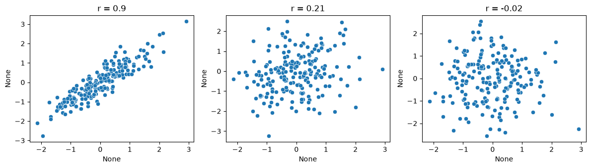
| 상관 계수 | 산점도의 모양 | 읽는 법 |
|---|---|---|
| 0.9 | 점들이 오른쪽 위로 향하는 좁은 띠를 이룬다 | 강한 양의 상관. x를 알면 y를 꽤 정확히 짐작할 수 있다 |
| 0.21 | 전체로는 오른쪽 위로 기울었으나 점이 넓게 퍼져 있다 | 약한 양의 상관. 경향은 있으나 x만으로 y를 짐작하기 어렵다 |
| -0.02 | 방향이 없는 둥근 구름 | 직선 관계가 거의 없다 |
공통 자료의 가입 기간과 연간 구매액(0.326)은 둘째 그림보다 조금 강한 정도의 관계이다. 5.1절의 산점도가 넓게 퍼져 보인 것과 같다.
곡선 관계와 상관 계수 [선택]
상관 계수는 직선 관계만 잰다. 아래 셀은 -3부터 3까지의 x와 그 제곱 y로 산점도를 그린다. y는 x로 완전히 정해지지만 상관 계수는 0이다.
# [예제 50]
v = pd.Series(np.linspace(-3, 3, 61))
w2 = v ** 2
print(round(v.corr(w2), 3))
sns.scatterplot(x=v, y=w2)
plt.title("y = x squared")
plt.show()0.0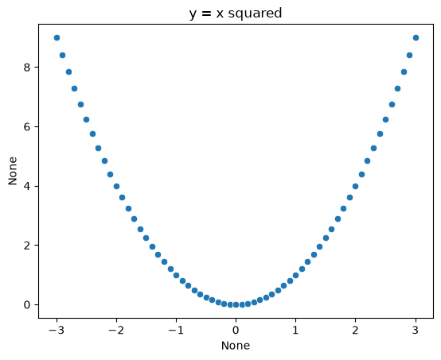
x가 음수인 쪽에서는 x가 커질 때 y가 작아지고, 양수인 쪽에서는 커진다. 두 쪽의 관계가 서로 상쇄되어 상관 계수가 0이 된다. 상관 계수가 작다고 관계가 없다고 단정하지 않고 산점도를 함께 보아야 하는 까닭이다.
결과 읽기
| 묻는 것 | 읽는 자리 | 이 절의 값 |
|---|---|---|
| 관계의 방향 | 상관 계수의 부호, 산점도의 기울기 | 가입 기간과 연간 구매액: 양(0.326) |
| 관계의 세기 | 상관 계수의 절댓값, 점의 띠의 폭 | 약한 편. 점이 넓게 퍼져 있다 |
| 직선이 아닌 관계 | 산점도의 모양 | 상관 계수만으로는 알 수 없다(곡선 관계의 0.0) |
| 이상치의 영향 | 무리에서 떨어진 점 | 0보다 작은 연간 구매액의 점 |
- 확인 18 노트북의 다섯 쌍 셀의 출력이
0.775이고, 세 산점도 셀의 출력이0.9 0.21 -0.02이다.
노트북 1부의 연습 9(색을 나눈 산점도)와 연습 10(결합 그래프, [선택])을 푼다.
6. 상관 행렬과 히트맵
6.1 상관 행렬: corr(numeric_only=True)
데이터프레임의 corr()는 모든 열의 쌍에 대하여 상관 계수를 구한 표(상관 행렬)를 돌려준다. 그런데 문자열 열이 섞인 데이터프레임에 그대로 쓰면 오류가 난다.
# [예제 51]
df.corr()ValueError: could not convert string to float: 'C02493'pandas 2.0부터 numeric_only의 기본값이 False로 바뀌어, 문자열 열(customer_id)의 값을 수로 바꾸려다 실패한 것이다. 이전 판의 자료나 블로그의 코드에는 df.corr()만 쓴 것이 많으므로, 시험에서 이 오류를 만나면 numeric_only=True를 넣는다.
# [예제 52]
corr = df.corr(numeric_only=True)
corr.round(2) age tenure_months visits_per_month avg_session_min cart_items coupon_use_rate \
age 1.00 -0.00 0.01 -0.00 -0.02 0.01
tenure_months -0.00 1.00 0.03 0.01 0.03 -0.01
visits_per_month 0.01 0.03 1.00 0.03 0.51 0.03
avg_session_min -0.00 0.01 0.03 1.00 0.02 0.01
cart_items -0.02 0.03 0.51 0.02 1.00 0.01
coupon_use_rate 0.01 -0.01 0.03 0.01 0.01 1.00
cs_calls 0.02 0.00 0.03 0.01 0.00 0.00
last_login_days -0.01 -0.03 0.02 0.01 0.02 -0.02
annual_spend 0.02 0.33 0.27 0.03 0.12 0.18
churn -0.01 -0.12 -0.21 -0.01 -0.09 -0.04
cs_calls last_login_days annual_spend churn
age 0.02 -0.01 0.02 -0.01
tenure_months 0.00 -0.03 0.33 -0.12
visits_per_month 0.03 0.02 0.27 -0.21
avg_session_min 0.01 0.01 0.03 -0.01
cart_items 0.00 0.02 0.12 -0.09
coupon_use_rate 0.00 -0.02 0.18 -0.04
cs_calls 1.00 0.01 -0.00 0.26
last_login_days 0.01 1.00 -0.04 0.37
annual_spend -0.00 -0.04 1.00 -0.21
churn 0.26 0.37 -0.21 1.00 상관 행렬은 대각선(자기 자신과의 상관, 1.00)을 기준으로 대칭이다. 0과 1로 된 churn도 수치형 열이므로 포함된다. 수치형 열이 10개이므로 상관 행렬은 10행 10열이다.
6.2 히트맵: heatmap
히트맵은 표의 값을 색의 진하기로 나타낸다. 상관 행렬처럼 열이 많은 표의 큰 값과 작은 값을 한눈에 찾는 데 쓴다.
| 인자 | 뜻 | 기본값 |
|---|---|---|
annot |
칸마다 값을 글자로 적는다 | 적지 않는다 |
fmt |
annot의 숫자 형식. ".2f"는 소수 둘째 자리 |
".2g"(유효 숫자 두 자리) |
cmap |
색의 배열. "coolwarm"은 음수를 파랑, 양수를 빨강으로 |
seaborn이 정한다 |
vmin, vmax |
색의 양 끝에 대응하는 값 | 자료의 최솟값과 최댓값 |
# [예제 53]
plt.figure(figsize=(9, 7))
sns.heatmap(corr, annot=True, fmt=".2f", cmap="coolwarm", vmin=-1, vmax=1)
plt.title("Correlation matrix")
plt.show()
상관 계수는 -1에서 1 사이이므로 vmin=-1, vmax=1을 주어야 색이 0을 가운데로 대칭이 된다. fmt의 기본값 ".2g"는 유효 숫자 두 자리여서 대각선이 1로 표시되는 등 자릿수가 들쑥날쑥하므로, 소수 자리를 맞추려면 fmt=".2f"를 쓴다.
결과 읽기: 목표 열의 행
히트맵에서 목표 열과의 관계를 읽을 때에는 목표 열의 이름이 붙은 행 하나를 왼쪽에서 오른쪽으로 따라간다. 상관 행렬은 대칭이므로 같은 이름의 열을 위에서 아래로 따라가도 같다. 아래 셀은 churn의 행을 꺼내어 출력하고, 그 행이 churn의 열과 같은지 확인한다. 이 셀은 강의안에서만 실행한다.
# [예제 55]
print(corr.loc["churn"].round(2))
print((corr.loc["churn"] == corr["churn"]).all())age -0.01
tenure_months -0.12
visits_per_month -0.21
avg_session_min -0.01
cart_items -0.09
coupon_use_rate -0.04
cs_calls 0.26
last_login_days 0.37
annual_spend -0.21
churn 1.00
Name: churn, dtype: float64
True마지막 True는 행과 열의 값이 모두 같다는 뜻이다. 행을 읽는 순서는 다음과 같다.
- 자기 자신의 칸을 뺀다.
churn과churn의 칸은 언제나 1.00이다. 가장 진한 칸이지만 답이 아니다. - 부호를 본다. 빨강(양수)이면 그 열이 클수록 이탈이 많고, 파랑(음수)이면 그 열이 클수록 이탈이 적다.
last_login_days(0.37)와cs_calls(0.26)는 양수,visits_per_month(-0.21)와annual_spend(-0.21)는 음수이다. - 크기를 본다. 물음이 “관계가 가장 강한 열”이면 부호를 떼고 크기를 비교한다. 물음이 “상관 계수가 가장 큰 열”이면 부호를 붙인 채 비교한다.
- 코드로 답을 구한다. 색의 진하기가 비슷한 칸(-0.21과 0.26)은 눈으로 순위를 가리기 어렵다.
| 묻는 것 | 읽는 자리 | churn의 행에서 |
|---|---|---|
| 가장 강한 양의 관계 | 가장 진한 빨강(자기 자신 제외) | last_login_days 0.37 |
| 가장 강한 음의 관계 | 가장 진한 파랑 | visits_per_month와 annual_spend의 -0.21(소수 둘째 자리에서 같다) |
| 거의 관계가 없는 열 | 흰색에 가까운 칸 | age -0.01, avg_session_min -0.01 |
6.3 상관 계수의 해석
상관 계수(피어슨 상관 계수)는 두 변수의 직선 관계의 방향과 세기를 나타낸다.
| 읽을 것 | 뜻 |
|---|---|
| 부호 | 양수이면 한쪽이 클 때 다른 쪽도 크고, 음수이면 한쪽이 클 때 다른 쪽은 작다 |
| 절댓값 | 1에 가까울수록 직선 관계가 강하다. 0에 가까우면 직선 관계가 거의 없다 |
| 크기의 기준 | 통상 절댓값 0.1~0.3을 약한, 0.3~0.7을 중간의, 0.7 이상을 강한 상관으로 읽는다. 분야마다 기준이 다르다 |
해석할 때 주의할 점은 세 가지이다. 첫째, 상관은 인과가 아니다. 마지막 접속 이후 경과 일수가 이탈과 상관이 있다고 하여 접속하지 않은 것이 이탈의 원인이라고 단정할 수 없다. 둘째, 상관 계수는 직선 관계만 잰다. 곡선 관계가 강하여도 상관 계수는 작을 수 있으므로 산점도를 함께 본다(5.3절의 곡선 관계). 셋째, 극단적인 이상치는 상관 계수를 크게 바꾼다. 3장에서 이상치를 제거한 뒤에는 상관 계수도 달라진다.
목표 열과의 상관을 묻는 문항은 상관 행렬에서 목표 열의 열(또는 행) 하나를 꺼내, 자기 자신을 빼고, 가장 큰 값의 위치를 구한다. “관계가 가장 강한 열”을 묻는 경우에는 음의 상관도 강한 관계이므로 절댓값(abs())을 쓴다. 아래 셀은 이탈 여부(churn)와 상관이 가장 강한 열을 구한다.
# [예제 54]
churn_corr = corr["churn"].drop("churn")
print(churn_corr.abs().sort_values(ascending=False).round(3))
print(churn_corr.abs().idxmax())last_login_days 0.369
cs_calls 0.255
visits_per_month 0.212
annual_spend 0.211
tenure_months 0.124
cart_items 0.090
coupon_use_rate 0.039
age 0.008
avg_session_min 0.007
Name: churn, dtype: float64
last_login_days이탈과 관계가 가장 강한 열은 last_login_days(0.369)이고, 다음은 cs_calls(0.255)이다. 히트맵에서 churn의 행을 따라가며 가장 진한 칸을 찾은 것과 같은 결과이다. 문항이 “상관 계수가 가장 큰”이라고 하였는지 “절댓값이 가장 큰”이라고 하였는지에 따라 abs()의 사용 여부가 달라지므로 가이드의 표현을 확인한다.
자기 자신을 빼지 않으면 어떻게 되는지를 세 줄로 비교한다. 이 셀은 강의안에서만 실행한다.
# [예제 57]
print(corr["churn"].idxmax())
print(corr["churn"].drop("churn").idxmax())
print(corr["churn"].drop("churn").abs().idxmax())churn
last_login_days
last_login_days첫 줄은 자기 자신(1.00)을 빼지 않아 churn이 답으로 나왔다. 둘째 줄(부호를 붙인 채 비교)과 셋째 줄(절댓값으로 비교)은 이 자료에서 같은 열이지만, 가장 강한 관계가 음수인 자료에서는 두 줄이 달라진다(8절의 시간 제한 문항 3).
흔한 오류
# [예제 56]
corr["Churn"]KeyError: 'Churn'| 증상 | 실제 메시지(마지막 줄) | 원인 | 대처 |
|---|---|---|---|
| 문자열 열이 섞인 표의 상관 | ValueError: could not convert string to float: 'C02493' |
df.corr(). pandas 2.0부터 numeric_only의 기본값이 False이다 |
df.corr(numeric_only=True) |
| 목표 열의 이름이 틀렸다 | KeyError: 'Churn' |
열 이름은 대소문자를 구분한다 | corr.columns로 확인한다 |
| 답이 목표 열 자신이다 | (오류 없음) | 자기 상관 1.00을 빼지 않았다 | drop("목표 열") |
| 음의 상관이 강한 열을 놓쳤다 | (오류 없음) | “관계가 강한”을 묻는데 abs()를 쓰지 않았다 |
abs().idxmax() |
| 색이 0을 가운데로 대칭이 아니다 | (오류 없음) | vmin, vmax를 주지 않았다 |
vmin=-1, vmax=1 |
- 확인 19 6.2절의 상관 행렬이 10행 10열이고, 대각선의 값이 모두
1.00이다. - 확인 20 연습 11의 히트맵이 5행 5열이고, 칸마다 소수 둘째 자리의 값이 적혀 있다.
노트북 1부의 연습 11(일부 열의 히트맵)을 푼다.
7. 중심 실습: 그래프 6종과 답 변수 6개
노트북 AICE_02장_실습_학생용.ipynb의 2부에서 수행한다. 학기 공통 자료의 원본으로 가이드가 지정한 그래프를 그리고, 그래프에서 읽은 답을 코드로 구하여 답 변수에 저장한다. 단계는 일곱 개이며, 아래 7-1~7-7의 단계 절에 단계마다의 조건과 확인, 막힐 때의 대처가 있다.
절차.
| 단계 | 그래프 | 할 일 | 답을 담을 변수 |
|---|---|---|---|
| 1 | 라이브러리 불러오기와 자료 읽기 | df |
|
| 2 | 1, 2 | 한 그림에 등급의 빈도 그래프(제목 Grade count)와 결제 수단별 이탈 비율의 막대그래프(제목 Churn rate by payment) |
fig1, axes1, ans1, ans2 |
| 3 | 3 | 연간 구매액의 히스토그램(구간 40개, 제목 Annual spend) |
ax3, ans3 |
| 4 | 4 | 세 열(age, tenure_months, avg_session_min)의 상자그림을 가로 세 칸에 |
fig4, axes4, ans4 |
| 5 | 5, 6 | visits_per_month와 cart_items의 결합 그래프, 수치형 열의 상관 행렬 히트맵(제목 Correlation matrix) |
g5, ax6, ans5, ans6 |
| 6 | 자가 채점 셀의 실행 | (출력 통과) |
|
| 7 | 값의 해석 두 문장 | (주석) |
세부 설정은 노트북의 단계별 가이드와 아래의 단계 절에 있다. 축을 지정된 변수에 저장하는 것은 자가 채점 셀이 제목과 축 이름을 검사하기 때문이다(2.3절의 「제목과 축 이름의 확인」).
물음.
| 변수 | 물음 |
|---|---|
ans1 |
빈도가 가장 높은 등급의 이름 |
ans2 |
이탈 비율이 가장 높은 결제 수단의 이름 |
ans3 |
연간 구매액이 0 이하인 행의 수 |
ans4 |
세 열 가운데 상자그림에 이상치 점이 나타나는 열의 이름의 리스트 |
ans5 |
visits_per_month와 cart_items의 상관 계수(소수 둘째 자리) |
ans6 |
annual_spend와 상관 계수가 가장 큰 열(자기 자신 제외)의 이름 |
완료 기준. 자가 채점 셀이 통과를 출력한다. 자가 채점 셀은 그래프 1~6의 칸 수, 제목, 축 이름과 ans1~ans6의 값을 검사한다.
제출물. 실행을 마친 노트북 파일. 그래프 6종, 자가 채점 셀의 통과, 단계 7의 두 문장이 있어야 한다.
7-1. 라이브러리와 자료
목적. 2부를 1부와 따로 실행할 수 있게 라이브러리를 불러오고 자료를 다시 읽는다.
- 2부 첫 코드 셀(단계 1)을 실행한다. 셀은 이미 작성되어 있다.
- 확인 21 단계 1의 출력이
(3030, 17)이다.
| 막힐 때의 증상 | 원인 | 대처 |
|---|---|---|
FileNotFoundError |
노트북의 위치가 바뀌었다 | 1장 0-2절의 셀로 자료 폴더를 확인하고 DATA를 고친다 |
| 1부에서 그린 그림이 2부의 그림에 섞인다 | 1부의 마지막 셀에서 plt.show()를 빠뜨렸다 |
2부는 단계 1부터 다시 실행한다 |
7-2. 범주형 변수의 분포(그래프 1, 2)
목적. 한 그림에 두 칸을 만들어 범주의 빈도와 범주별 비율을 나란히 그린다. 시험에서 “한 그림에 두 그래프”로 묻는 형식이다.
plt.subplots(1, 2, figsize=(10, 4))로 그림을 만들어fig1,axes1에 저장한다.- 왼쪽 칸에
grade의 빈도 그래프를 그린다. 막대의 순서는 Bronze, Silver, Gold, VIP이다. - 오른쪽 칸에 결제 수단(
payment)별churn의 평균을 막대그래프로 그린다. 오차 막대는 표시하지 않는다. - 두 칸에 제목을 붙인다. 왼쪽은
Grade count, 오른쪽은Churn rate by payment이다. ans1과ans2를 그래프가 아닌 자료에서 코드로 구한다(3.1절과 3.2절).
작성할 코드의 조건.
그래프 함수마다
ax=로 칸을 지정한다(1.6절의 겹친 그림을 피한다).제목은 칸마다 축의 메서드로 붙인다.
plt.title은 오른쪽 칸에만 붙는다(2.3절).ans1,ans2는 문자열이다.확인 22 한 그림에 두 칸이 나란히 있고, 왼쪽 칸의 막대가 Bronze, Silver, Gold, VIP의 순서이다.
axes1[0].get_title()이'Grade count'이다. 오른쪽 칸의 막대 끝에 검은 선이 없다.
| 막힐 때의 증상 | 원인 | 대처 |
|---|---|---|
| 두 그래프가 오른쪽 칸에 겹친다 | ax=를 빠뜨렸다 |
ax=axes1[0], ax=axes1[1] |
AttributeError: 'numpy.ndarray' object has no attribute 'set_title' |
axes1.set_title(...) |
칸을 골라 axes1[0].set_title(...) |
| 셀이 오래 걸린다 | 오차 막대(신뢰 구간)를 계산하고 있다 | errorbar=None |
ans2가 0.2 근처의 수이다 |
max()를 썼다 |
이름을 물으므로 idxmax() |
7-3. 수치형 변수의 분포(그래프 3)
목적. 연간 구매액의 분포를 보고, 히스토그램의 왼쪽 끝에 보이는 불가능한 값(0 이하)의 수를 구한다.
annual_spend의 히스토그램을 구간 40개로 그린다. 그래프 함수가 돌려준 축을ax3에 저장한다.ax3에 제목Annual spend를 붙인다.- 연간 구매액이 0 이하인 행의 수를
ans3에 저장한다. 조건식의 참·거짓을 세는 방법(1장 3.5절의sum())을 쓴다.
작성할 코드의 조건.
ax3 = sns.histplot(...)처럼 반환값을 저장한다. 축 수준 함수는 그 축을 돌려준다(1.5절).“0 이하”는 0을 포함한다(
<=).확인 23
len(ax3.patches)가 40이다. 그래프의 x축 이름이annual_spend이다.
| 막힐 때의 증상 | 원인 | 대처 |
|---|---|---|
ax3가 None이다 |
plt.show()의 반환값을 저장하였다 |
그래프 함수의 반환값을 저장한다 |
len(ax3.patches)가 40이 아니다 |
bins를 빠뜨렸거나 다른 셀의 그림에 겹쳐 그렸다 |
bins=40. 셀을 다시 실행한다 |
ans3이 True/False의 시리즈이다 |
sum()을 빠뜨렸다 |
조건식에 .sum() |
7-4. 상자그림(그래프 4)
목적. 세 열의 상자그림을 나란히 그리고, 이상치 점이 나타나는 열을 그래프의 계산과 같은 식으로 판정한다.
plt.subplots(1, 3, figsize=(12, 4))로 그림을 만들어fig4,axes4에 저장한다.- 세 칸에
age,tenure_months,avg_session_min의 상자그림을 차례로 그린다(y=열 이름). 각 칸의 제목은 열 이름이다. - 세 열의 Q1과 Q3를 한 번에 구한다.
df[cols].quantile(0.25)는 열마다의 Q1을 담은 시리즈를 돌려준다. - 세 열 각각에서 경계 밖의 값의 개수를 구한다. 데이터프레임과 시리즈를 비교하면 열 이름을 기준으로 맞추어 계산된다.
- 개수가 0보다 큰 열의 이름을 리스트로
ans4에 저장한다.
작성할 코드의 조건.
경계는 Q1 - 1.5×IQR과 Q3 + 1.5×IQR이다(4.2절의 손 계산과 같은 식).
상자그림의 점을 눈으로 세지 않는다.
ans4는 리스트이다. 문자열 하나가 아니다.확인 24 세 칸의 y축 이름이 차례로
age,tenure_months,avg_session_min이다. 판정에 쓴 열별 개수가 세 열 모두에 대하여 출력된다.type(ans4)가 리스트이다.
| 막힐 때의 증상 | 원인 | 대처 |
|---|---|---|
| 세 상자가 한 칸에 겹친다 | ax=를 빠뜨렸다 |
ax=axes4[0] ~ axes4[2] |
| 상자그림이 가로로 누웠다 | x=에 열을 주었다 |
y=열 이름 |
ans4가 문자열 하나이다 |
idxmax()로 가장 많은 열만 골랐다 |
개수가 0보다 큰 열 모두. index.tolist() |
| 개수가 모두 0이다 | 경계식의 부호를 바꾸어 썼다 | 아래 경계는 q1 - 1.5 * iqr, 위 경계는 q3 + 1.5 * iqr |
7-5. 두 변수의 관계(그래프 5)
목적. 두 수치형 열의 관계와 각자의 분포를 결합 그래프로 함께 보고, 관계의 세기를 상관 계수로 구한다.
visits_per_month를 x축,cart_items를 y축으로 하는 결합 그래프를height=5로 그린다. 반환값을g5에 저장한다.- 두 열의 상관 계수를 구하여 소수 둘째 자리까지 반올림한 값을
ans5에 저장한다(5.3절).
작성할 코드의 조건.
결합 그래프는 그림 수준 함수이므로
subplots의 칸에 넣지 않는다(1.5절).x와 y를 가이드대로 둔다. 바꾸어 주면 자가 채점의 축 검사가 실패한다.
반올림은
round(값, 2)로 한다.확인 25 그림 가운데에 산점도가, 위와 오른쪽에 히스토그램이 있다.
g5.ax_joint.get_xlabel()이'visits_per_month'이다.
| 막힐 때의 증상 | 원인 | 대처 |
|---|---|---|
경고 Ignoring `ax`; jointplot is a figure-level function. |
ax=를 주었다 |
ax=를 지운다 |
g5.ax_joint에서 AttributeError |
g5에 결합 그래프가 아닌 것(예: plt.show()의 반환값)을 저장하였다 |
g5 = sns.jointplot(...) |
ans5가 0.5 근처이나 자리가 길다 |
반올림을 하지 않았다 | round(..., 2) |
7-6. 상관 행렬과 히트맵(그래프 6)
목적. 수치형 열의 상관 행렬을 히트맵으로 그리고, 목표 열의 행을 읽어 답을 구한다.
- 수치형 열만의 상관 행렬을
corr에 저장한다(6.1절). plt.figure(figsize=(9, 7))로 그림을 만들고, 값을 소수 둘째 자리까지 표시한 히트맵을cmap="coolwarm",vmin=-1,vmax=1로 그린다. 히트맵 함수가 돌려주는 축을ax6에 저장한다.ax6에 제목Correlation matrix를 붙인다.annual_spend의 행(또는 열)을 꺼내 자기 자신을 빼고, 상관 계수가 가장 큰 열의 이름을ans6에 저장한다(6.2절의 「결과 읽기」 네 단계).
작성할 코드의 조건.
물음은 “상관 계수가 가장 큰”이므로 부호를 붙인 채 비교한다. 절댓값을 쓰지 않는다.
ans6은 문자열이다.확인 26
corr.shape가(10, 10)이다. 히트맵의 대각선 칸이 모두1.00이다.
| 막힐 때의 증상 | 원인 | 대처 |
|---|---|---|
ValueError: could not convert string to float: 'C02493' |
numeric_only=True를 빠뜨렸다 |
df.corr(numeric_only=True) |
ans6이 annual_spend이다 |
자기 자신을 빼지 않았다 | drop("annual_spend") |
칸의 값이 0.3, 1처럼 자릿수가 다르다 |
fmt를 주지 않았다 |
fmt=".2f" |
| 그림이 작아 글자가 겹친다 | figsize를 주지 않았다 |
plt.figure(figsize=(9, 7))을 히트맵보다 먼저 |
7-7. 자가 채점과 값의 해석
목적. 단계 2~5의 그림과 답이 기준과 같은지 확인하고, 두 그래프의 결과를 업무의 말로 해석한다.
- 자가 채점 셀을 실행한다. 셀은 작성되어 있고 고치지 않는다.
AssertionError가 나면 메시지가 가리키는 그래프나 변수의 단계로 돌아가 고친 뒤, 그 단계의 셀과 자가 채점 셀을 다시 실행한다. - 단계 7의 셀에 다음 두 물음의 답을 주석으로 한 문장씩 쓴다.
- 그래프 4에서
avg_session_min의 상자가 납작하게 보이는 까닭은 무엇인가. ans6의 열과annual_spend의 상관 계수는 얼마이며, 그 크기를 어떻게 해석하는가.
- 그래프 4에서
- 노트북을 저장한다.
- 확인 27 자가 채점 셀의 마지막 줄에
통과가 출력된다. - 확인 28 단계 7의 셀에 주석 두 줄이 있고, 둘째 줄에 상관 계수의 값과 그 크기의 해석(약한, 중간의, 강한 가운데 하나)이 들어 있다.
| 막힐 때의 증상 | 원인 | 대처 |
|---|---|---|
AssertionError: 그래프 1의 제목이 다르다 |
plt.title을 썼거나 제목의 철자가 다르다 |
axes1[0].set_title("Grade count"). 대소문자와 공백까지 같게 |
AssertionError: 그래프 4의 세 번째 칸이 다르다 |
세 열의 순서가 다르다 | age, tenure_months, avg_session_min의 순서 |
AssertionError: ans4가 다르다 |
리스트가 아니거나 열이 빠졌다 | 7-4의 표 |
NameError: name 'g5' is not defined |
단계 5의 셀을 실행하지 않았다 | 단계 1부터 차례로 실행한다 |
| 해석의 상관 계수를 모른다 | corr.loc["ans6의 열", "annual_spend"]처럼 상관 행렬의 칸을 꺼낸다 |
8. 시간 제한 문항
제한 시간은 15분이다. 노트북의 3부에서 푼다.
가상의 중고 노트북 거래 자료 laptops.csv를 사용한다. 공식 문서 사이트만 참고한다. 각 문항의 답은 한 셀에 작성한다. 아래 셀을 먼저 실행한다.
| 열 | 뜻 |
|---|---|
listing_id |
거래 번호 |
brand, cpu |
제조사, 처리 장치 |
ram_gb, ssd_gb, screen_inch |
메모리(GB), 저장 장치(GB), 화면 크기(인치) |
age_months, battery_health |
사용 기간(개월), 배터리 성능(%) |
condition |
외관 등급(A, B, C) |
price, sell_speed |
거래 가격(만 원), 판매 속도(fast, normal, slow) |
import pandas as pd
import matplotlib.pyplot as plt
import seaborn as sns
DATA = "../kit/data/AICE_공통/"
lap = pd.read_csv(DATA + "laptops.csv")
print(lap.shape)문항 1 (빈칸 채우기)
가로로 두 칸인 그림을 만들어 왼쪽 칸에 제조사(brand)의 빈도 그래프를, 오른쪽 칸에 외관 등급(condition)별 가격(price)의 상자그림을 그린다. 왼쪽 칸의 제목은 Brand count, 오른쪽 칸의 제목은 Price by condition이다. 빈칸 ___을 채운다.
fig, axes = plt.___(1, 2, figsize=(10, 4))
sns.countplot(data=lap, x="brand", ___=axes[0])
sns.boxplot(data=lap, x="condition", y="price", order=["A", "B", "C"], ax=axes[1])
axes[0].___("Brand count")
axes[1].set_title("Price by condition")
plt.tight_layout()
plt.show()문항 2 (오류 정정)
아래 코드는 메모리(ram_gb)를 x축, 가격(price)을 y축으로 하는 산점도를 그리고 제목 Price by RAM을 붙이려 한다. 실행하면 오류가 난다. 오류를 모두 정정하여 실행한다.
sns.scatterplot(data=lap, x=ram_gb, y="Price")
plt.title("Price by RAM")
plt.show()문항 3 (답 변수)
수치형 열의 상관 행렬을 히트맵으로 그린다(값 표시, 소수 둘째 자리). 가격(price)과 상관 계수의 절댓값이 가장 큰 열(자기 자신 제외)의 이름을 ans_t3에 저장한다.
# 여기에 코드를 작성한다스스로 점검
fig, axes = plt.subplots(2, 3)으로 만든 그림에서 둘째 행의 첫 칸에 그래프를 그리려면ax=에 무엇을 주는가.axes[3]이라고 쓰면 어떤 오류가 나는가.- 가로 두 칸의 그림에서 두 그래프 함수에
ax=를 모두 빠뜨렸다. 그림은 어떻게 보이고, 그 까닭은 무엇인가. - 값 2, 2, 3, 4, 4, 5, 6, 6, 7, 20의 히스토그램을 구간 3개로 그리면 구간의 경계와 구간별 개수는 어떻게 되는가.
- 4.2절의 작은 자료(1, 2, 2, 3, 3, 3, 4, 4, 5, 9)에서 9를 6으로 바꾸면 위 수염의 끝은 어디가 되고, 수염 밖의 점은 남는가.
- 상관 계수가 0에 가까운데 산점도에서는 뚜렷한 모양이 보인다. 어떤 경우이며, 무엇을 뜻하는가.
- 히트맵에서 목표 열의 행을 읽어 “목표 열과 관계가 가장 강한 열”을 답하는 순서를 쓰라.
jointplot을subplots의 한 칸에 넣으려고ax=를 주었다. 무슨 일이 일어나는가.- 한글 글꼴을 지정하였는데도 그림의 한글이 네모로 나온다. 확인할 것 두 가지는 무엇인가.
9. 정리
| 주제 | 기억할 것 |
|---|---|
| 실습 준비 | 그래프 셀은 plt.show()로 끝맺는다. 그림이 안 보이면 %matplotlib inline |
| 그림과 축 | Figure는 종이, Axes는 칸. fig, axes = plt.subplots(행, 열, figsize=(가로, 세로)) |
| 칸 지정 | 축 수준 함수에 ax=axes[i](2차원이면 axes[행, 열]). 빠뜨리면 마지막 칸에 겹친다 |
| 그림 수준 함수 | jointplot은 새 그림을 만든다. 크기는 height, 제목은 g.figure.suptitle(), 가운데 축은 g.ax_joint |
| 제목과 축 | plt.title·plt.xlabel(현재 축) 또는 ax.set_title·ax.set_xlabel(지정한 칸). 회전은 plt.xticks(rotation=), ax.tick_params(axis="x", rotation=). 확인은 ax.get_title() |
| 한글 글꼴 | 찾기(get_font_names) → 증상 → 지정(font.family, axes.unicode_minus = False)·확인(findfont) → 다시 그리기 → 되돌리기 |
| 범주형 분포 | countplot(행 수, order, hue), barplot(y의 요약, estimator, errorbar=None) |
| 히스토그램 | 폭 = (최댓값 - 최솟값) ÷ 구간 수. 구간 수가 적으면 뭉개지고 많으면 들쭉날쭉하다 |
| 상자그림 | Q1, 중앙값, Q3, 경계 Q1 - 1.5×IQR과 Q3 + 1.5×IQR. 수염의 끝은 경계 안의 가장 먼 실제 값 |
| 관계 | scatterplot(hue), jointplot(kind), 시리즈.corr(시리즈). 상관 계수는 직선 관계만 잰다 |
| 상관 행렬 | df.corr(numeric_only=True), heatmap(annot=True, fmt=".2f", vmin=-1, vmax=1). 목표 열의 행에서 자기 자신을 빼고 idxmax(), 관계의 세기는 abs() |
| 답 변수 | 그래프에서 읽은 값도 그래프를 그린 자료에서 코드로 구한다 |
다음 장에서는 본 장의 상자그림과 히스토그램에서 확인한 불가능한 값과 이상치를 제거하고, 결측치를 처리하여 정제본을 작성한다.
참고 자료
확인일은 2026-11-13이다. 표시한 항목은 2026-11-14 또는 2026-11-16에 확인하였다.
- Matplotlib, Quick start guide. https://matplotlib.org/stable/users/explain/quick_start.html
- Matplotlib,
matplotlib.pyplot.subplots. https://matplotlib.org/stable/api/_as_gen/matplotlib.pyplot.subplots.html - Matplotlib,
matplotlib.pyplot.figure. https://matplotlib.org/stable/api/_as_gen/matplotlib.pyplot.figure.html - Matplotlib,
matplotlib.pyplot.xticks. https://matplotlib.org/stable/api/_as_gen/matplotlib.pyplot.xticks.html - Matplotlib,
matplotlib.pyplot.legend. https://matplotlib.org/stable/api/_as_gen/matplotlib.pyplot.legend.html - Matplotlib, Customizing Matplotlib with style sheets and rcParams. https://matplotlib.org/stable/users/explain/customizing.html
- Matplotlib,
matplotlib.axes.Axes.tick_params(2026-11-14 확인). https://matplotlib.org/stable/api/_as_gen/matplotlib.axes.Axes.tick_params.html - Matplotlib,
matplotlib.figure.Figure.suptitle(2026-11-14 확인). https://matplotlib.org/stable/api/_as_gen/matplotlib.figure.Figure.suptitle.html - Matplotlib,
matplotlib.pyplot.tight_layout(2026-11-14 확인). https://matplotlib.org/stable/api/_as_gen/matplotlib.pyplot.tight_layout.html - Matplotlib,
matplotlib.font_manager(get_font_names,findfont, 2026-11-16 확인). https://matplotlib.org/stable/api/font_manager_api.html - Matplotlib,
matplotlib.cbook.boxplot_stats(whislo,whishi,fliers, 2026-11-16 확인). https://matplotlib.org/stable/api/cbook_api.html - NumPy,
numpy.histogram(2026-11-16 확인). https://numpy.org/doc/stable/reference/generated/numpy.histogram.html - seaborn, Overview of seaborn plotting functions. https://seaborn.pydata.org/tutorial/function_overview.html
- seaborn, Visualizing categorical data. https://seaborn.pydata.org/tutorial/categorical.html
- seaborn,
seaborn.countplot. https://seaborn.pydata.org/generated/seaborn.countplot.html - seaborn,
seaborn.barplot. https://seaborn.pydata.org/generated/seaborn.barplot.html - seaborn,
seaborn.histplot. https://seaborn.pydata.org/generated/seaborn.histplot.html - seaborn,
seaborn.boxplot. https://seaborn.pydata.org/generated/seaborn.boxplot.html - seaborn,
seaborn.scatterplot. https://seaborn.pydata.org/generated/seaborn.scatterplot.html - seaborn,
seaborn.jointplot. https://seaborn.pydata.org/generated/seaborn.jointplot.html - seaborn, What’s new in v0.12.0 (
errorbar인자의 도입, 2026-11-16 확인). https://seaborn.pydata.org/whatsnew/v0.12.0.html - seaborn,
seaborn.JointGrid(ax_joint,ax_marg_x,ax_marg_y, 2026-11-16 확인). https://seaborn.pydata.org/generated/seaborn.JointGrid.html - seaborn,
seaborn.heatmap. https://seaborn.pydata.org/generated/seaborn.heatmap.html - pandas,
DataFrame.corr. https://pandas.pydata.org/docs/reference/api/pandas.DataFrame.corr.html - pandas,
DataFrame.quantile. https://pandas.pydata.org/docs/reference/api/pandas.DataFrame.quantile.html